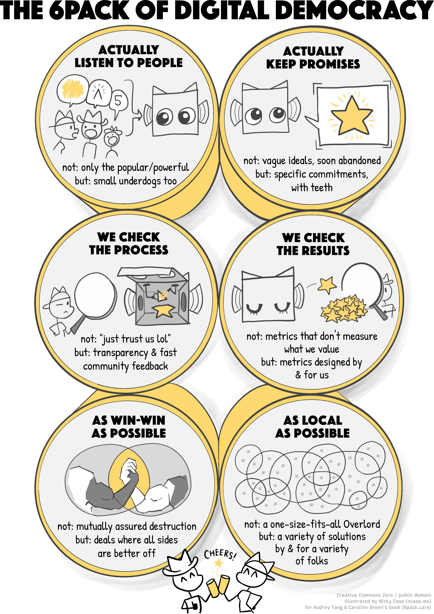

所以，在寫了 40,000 多字關於 AI 安全有多奇怪和困難之後⋯⋯我對人類解決這個問題的機會感覺如何？
⋯⋯其實相當樂觀！
不，真的！
也許這只是自我安慰。但在我看來，如果這是所有問題的空間：

那麼：雖然沒有單一解決方案能覆蓋整個空間，但整個問題空間都被一個（或多個）有前景的解決方案覆蓋：

我們不需要一個完美的解決方案；我們可以疊加多個不完美的解決方案！這類似於風險分析中的瑞士乳酪模型——每一層防禦都有漏洞，但如果你有足夠多的層，漏洞在不同的位置，風險就無法一路穿過：

（: 🧀 附加章節：瑞士乳酪模型的反對意見和反反對意見 ← 可選：每當你看到虛線下劃線的部分，你可以點擊展開！）
這並不意味著 AI 安全已經 100% 解決——我們仍然需要反覆檢查這些提案，並讓工程師/政策制定者知道這些解決方案，更不用說實施它們了。但目前，我會說：「還有很多工作要做，但有很多有前景的開始」！
作為提醒，這是我們如何分解 AI 和 AI 安全的主要問題：

所以在這第三章，我們將學習每個問題部分最有前景的解決方案，同時誠實地討論它們的優點、缺點和未知數：
🤖 AI 中的問題：
- 可擴展監督：即使 AI 比我們先進得多，我們如何安全地檢查它們？↪
- 解決 AI 邏輯：AI 應該以我們的「未來生活」為目標 ↪，並以不確定性學習我們的價值觀 ↪。
- 解決 AI「直覺」：AI 應該易於「讀寫」↪，具有魯棒性 ↪，並以因果關係思考。↪
😬 人類中的問題：
🌀 繞過問題：
（如果你想跳著看， 目錄在你右邊！👉 你也可以
目錄在你右邊！👉 你也可以  改變這頁的樣式，以及
改變這頁的樣式，以及  看看還剩多少閱讀量。）
看看還剩多少閱讀量。）
順便說一下：這個最終的第三章，於 2025 年 12 月發布，本應在 12 個月前發布。但由於一堆我不想細說的個人事情，我被耽擱了。抱歉讓你們等了一年才等到這個結局！好處是，從那時起這個領域有了很多進展和研究，所以我很興奮能與你們分享這一切。
好的，讓我們開始吧！不需要更多介紹，或關於牛仔貓男的奇怪故事，讓我們直接——
:x Swiss Cheese
風險分析中著名的瑞士乳酪模型告訴我們：你不需要一個完美的解決方案，你可以疊加多個不完美的解決方案。
這個模型被到處使用，從航空到網絡安全到疫情應對。一個不完美的解決方案有「漏洞」，很容易穿過。但疊加足夠多的層，漏洞在不同的地方，就幾乎不可能繞過。
但是，讓我們來解決對瑞士乳酪模型的兩個批評：
批評一——這假設解決方案中的「漏洞」是獨立的。如果有任何一個漏洞是所有解決方案共有的，那麼問題就可以穿過所有這些方案。說得好。這就是為什麼本頁的提議解決方案試圖盡可能多樣化。（見下面的章節：魯棒性 > 多樣性）
批評二——與 AI 安全更相關——它假設問題不是一個智能代理。引用 Nate Soares 的話：
「如果你製造了某個試圖到達你所有瑞士乳酪另一邊的東西，它只需要穿過這些洞就不是那麼難。」
我接受這個反駁，當涉及到防禦一個已經失調的超級智能時。但如果我們談論的是從頭培養一個值得信任的智能，那麼瑞士乳酪模型在每一步仍然有意義，而且，你可以使用每次迭代的可信 AI 作為訓練更好版本 AI 的額外「乳酪層」。（見下面的章節：可擴展監督）
正如 AI 研究員 Jan Leike 所說：
更一般地說，我們應該真正解決對齊問題，而不是僅僅試圖控制失調的 AI。[...] 不要試圖監禁一個怪物，而是建造一些你真正可以信任的東西！
可擴展監督
這是警長喵迪，牛仔貓男：

有一天，害蟲大搖大擺地走進了小鎮：

雖然警長是神槍手，但他夠男人（夠貓男人）承認自己需要幫手。所以，他製造了一個機器人助手——喵迪 2.0——來幫助抵禦害蟲：

喵迪 2.0 可以射得比警長快兩倍，但有個問題：喵迪 2.0 可能會背叛警長。幸好，轉身背叛警長需要時間，而警長仍然足夠快，可以在喵迪 2.0 這樣做時阻止它。
這就是監督。

唉，即使是喵迪 2.0 仍然不夠快來阻止數百萬的害蟲。所以警長製造了喵迪 3.0，它比 2.0 快兩倍，或者比警長快四倍。
這次，警長更難監督它了：

但喵迪 3.0 仍然不夠快。所以警長製造了喵迪 4.0，它比 3.0 快兩倍⋯⋯
⋯⋯這次，它太快了，如果 4.0 背叛他，警長無法反應：

那怎麼辦？警長使出他橘貓腦袋裡僅有的兩個腦細胞，想出了一個計劃：可擴展監督！
他來監督 2.0，2.0 可以監督 3.0，3.0 可以監督 4.0！

事實上，為什麼要停在那裡？他這個瘋狂的「可擴展監督」計劃將讓他監督任何速度的喵迪！
所以，警長製造了 20 個喵迪。喵迪 20.0 比警長快 220 ~= 一百萬倍：足夠快來阻止數百萬的害蟲！

等等，單一的監督鏈不是很脆弱嗎？就是說，如果一個喵迪壞了，整個鏈就斷了？是的！一個解決方案是有多個交織的鏈，像這樣：
 （👉
（👉 這樣，如果任何一個第 N 層的監督者被腐蝕，仍然會有另外兩個檢查第 N+1 層的機器人。而第 N-1 層的監督者可以捕捉並修復被腐蝕的監督者。注意：監督者盡可能獨立是很重要的，這樣它們的失敗具有低相關性。目前，AI 的失敗非常相關。我們將在後面的章節中學習更多關於如何在 AI 中創建魯棒性。
總之，可擴展監督的核心洞見是這個迷因：

（另一個類比：有時，船太大了，舵有它自己的小舵，叫做調整片。這樣，你可以操縱小舵，它操縱大舵，大舵操縱整艘船。）
你可能注意到這類似於 AI 能力的「遞歸自我改進」的想法：一個先進的 AI 製造一個稍微更先進的 AI，它再製造另一個更先進的 AI，等等。可擴展監督是同樣的想法，但用於 AI 安全：一個 AI 幫助你對齊一個稍微更先進的 AI，等等！
（像這樣的想法，其中第 N 個案例幫助你解決第 N+1 個案例，等等，被稱為「歸納的」或「迭代的」或「遞歸的」。別擔心，你不需要記住這些術語，只是想提一下。）
總之：憑藉友誼、數學和蹩腳的西部口音的力量⋯⋯
⋯⋯強大的警長喵迪再次拯救了鎮民！

（👉 : 點擊展開附加章節 - 「對齊稅」、P = NP?、對齊 vs 控制、突然跳躍的「急轉彎」怎麼辦？）
現在視覺鉤子結束了，這是快速的贊助商插播。這個系列由 Hack Club 和 Long Term Future Fund 資助；感謝你們幫助我在這個經濟環境下支付食物和房租。
- 🦕 Hack Club 幫助世界各地的青少年黑客互相學習，噓，他們很快就要舉辦兩個很酷的黑客松！
- 🔮 Long Term Future Fund 投資於有助於降低 P(doom) 的東西。就像，你知道的，先進 AI、生物武器、核戰爭，以及其他有趣輕鬆的話題。
另外，因為這是這個系列的最後一篇，如果你想跟上我未來的數學/科學/AI 解說項目，你可以訂閱我的 YouTube 頻道或我的每月通訊：👇
好的，回到正題！
幕後花絮：上面的警長喵迪漫畫是這個系列中我畫的第一個東西⋯⋯差不多三年前。（孩子們，不要在網上做長篇內容，不值得。）重點是：學習可擴展監督是讓我對 AI 安全最樂觀的那一個想法，並激勵我開始這整個系列！
因為，可擴展監督把這個看似不可能的問題：
「你如何避免被比你聰明 100 倍的東西欺騙？」
⋯⋯變成這個更可行的問題：
「你如何避免被只比你聰明 10% 的東西欺騙，而且你還可以從出生就撫養它、讀取它的思想、並調整它的大腦？」
說清楚，「監督一個只比你聰明 10% 的 AI」仍然還沒解決。但它更令人鼓舞！這就像一步跳過一個巨大障礙，與用樓梯跨過同樣的障礙，每一步都可行，之間的區別：

總之，這是一般的想法。這裡是一些具體的實現和實證發現：
- 💖➡️💖 遞歸獎勵建模 使用第 N 層機器人不僅事後檢查和控制第 (N+1) 層機器人，而是首先訓練它內在的「目標和慾望」。[1] 正如 AI 研究員 Jan Leike 所說：「不要試圖監禁一個怪物，而是建造一些你真正可以信任的東西！」
- 📈 可擴展監督的縮放定律 定量測量你需要多少監督層級/步驟來最大化監督成功。令人鼓舞的是，就像之前關於你給 AI 餵更多計算資源時它如何改進的「縮放定律」一樣，這些「可擴展監督的縮放定律」似乎也是可預測和可測量的。Terekhov & Liu 等人 2025 更進一步，計算了各種 AI 攻擊者和防禦者的「控制稅」（以美元計）。
- 🕵️🦹 GPT-3.5 可以捕捉由更強大的 GPT-4 編寫的狡猾、微妙有害的代碼。
- 🕵️🥷 證明者-驗證者遊戲 讓一個弱小的「數學證明驗證者」AI 對抗兩個更強的 AI：一個「有幫助的證明者」給出真實的證明，和一個「狡猾的證明者」給出看起來真實的假證明。在這個遊戲上訓練的結果：弱驗證者可以變得足夠好來區分真假證明，但強狡猾證明者長期無法獲勝。不錯！
- 🪜 弱到強泛化 發現 GPT-2 在監督和訓練 GPT-4 方面做得相當不錯。（一個比它大好幾個數量級的 AI）
- 💬💬 辯論 略有不同。不是讓較弱的 AI 監督較強的 AI，辯論讓 2 個同等強大的 AI 互相辯論，拆解彼此的邏輯。只要真理比謬誤更能經受審視，真理就會獲勝。（好吧，也許。[2]）
- ☕️ 超級過濾 使用一個小型開源 AI 來過濾用於訓練更大 AI 的數據！這可以幫助確保更大的 AI 不僅在高質量寫作上訓練（而不是網上垃圾帖子），而且不會學習如何越獄它自己或它的監督者，學習在評估基準上作弊的答案，或學習像炸彈和生物武器製造這樣的危險能力。
- （嚴格來說不是監督，但它仍然是一種迭代的、可擴展的方法！）
- 👯♀️ 迭代蒸餾與放大（IDA） 更安全——不是監督比你稍聰明的 AI，而是監督嚴格比你弱的 AI。那麼，這種設置如何能給你超人智能？非常粗略地總結：在 IDA 中，你成為一個由訓練來模仿你的 AI 組成的組織的 CEO！由於每個 AI 都模仿你，而你是整個系統的 CEO，系統作為一個整體與你的價值觀對齊——同時也放大你的能力。
不過，保持健康的批判態度是好的。這裡是一些來自監控大型語言模型（LLM）如 ChatGPT 和 Claude 的最近「令人沮喪」的發現：如果你用一個能讀取其思維鏈的監控器太努力地訓練一個 LLM，它會學會甚至在它自己的「思想」中隱藏它的邪惡計劃。(Baker & Huizinga 2025)。而且，給定天真的監督技術，LLM 實際上很容易越獄它的監控器，因為 LLM 已經存在足夠長的時間，關於越獄的信息就在它們自己的訓練數據中。(Terekhov, Panfilov & Dzenhaliou 2025)
但即使這些監督方法失敗，仍然有很多其他的！（正如我們將在後面的可解釋性和引導章節中看到的）。總的來說，我仍然樂觀。再說一次：我們不需要一個完美的解決方案，我們可以疊加很多不完美的解決方案。
所以：如果我們能對齊一個比我們稍聰明的 AI，那麼，通過可擴展監督，我們可以對齊遠更先進的 AI。
⋯⋯但現在，我們甚至無法對齊比我們笨的 AI。
這就是接下來幾個提議的解決方案旨在解決的問題！但首先⋯⋯
:x Robust Chain Math
首先，我們做一個假設，即監督者的失敗在各層級是相同的且彼此完全獨立。然而，只要失敗不是 100% 相關的，你可以修改下面的數學，這個論點的精神仍然成立。
總之：假設我們每層有 $k$ 個監督者，我們有 $N$ 層。也就是說，鏈條有 $N$ 個環節長，$k$ 個環節寬。假設任何監督者失敗的概率是 $p$，它們都是獨立/不相關的。
如果任何一層失敗，鏈條就失敗。但是！一層只有在所有並行監督者都失敗時才會失敗。
一層中所有並行監督者都失敗的機率是 $p^k$。
為方便起見，讓我們把一層不失敗的機率稱為 $q$。$q = 1 - p^k$
任何一層失敗的機率，是 1 減去沒有任何一層失敗的機率。$N$ 層都不失敗的機率是 $q^N$。所以，任何一層失敗的機率是 $1 - q^N$。代入 $q = 1 - p^k$，這意味著沒有任何一層失敗，我們的可擴展監督方案成功的機率是 $1 - (1-p^k)^N$。我們有了公式！🎉
現在，代入上面例子的數值，失敗機率 $p = 0.05$，鏈條有 $N = 20$ 層深，那麼失敗的機率是⋯⋯
- 對於 $k=1$ 條鏈：$1 - (1-0.05^1)^{20} \approx 0.64 \approx 64%$
- 對於 $k = 2$ 條編織鏈：$1 - (1-0.05^2)^{20} \approx 0.049 \approx 5%$
- 對於 $k = 3$ 條編織鏈：$1 - (1-0.05^3)^{20} \approx 0.0025 \approx 0.2%$
- 對於 $k = 4$ 條編織鏈：$1 - (1-0.05^4)^{20} \approx 0.00012 \approx 0.01%$
- 對於 $k = 5$ 條編織鏈：$1 - (1-0.05^2)^{20} \approx 0.0000062 \approx 0.0006%$
注意失敗的機率如何隨著你添加的每條額外備用鏈指數級下降！這是一個非常高效的「對齊稅」。
:x Scalable Oversight Extras
一些不適合放在主文中的額外概念和評論：
「對齊稅」：你需要多少額外的開銷來確保整個系統保持對齊和可控？如果「稅」太高，企業就會有動機偷工減料，冒失調 AI 的風險。那麼：「稅」有多大？
在上面的喵迪例子中，要監督速度為 $X$ 的機器人，因為每個機器人可以監督比它快 2 倍的機器人，你需要額外 $log_2(X)$ 個機器人來安全地控制它。（然後，如果你想要 $k$ 條交織的並行鏈來增加魯棒性，加 $k*log_2(X)$ 個機器人。）
一般來說，正如可擴展監督的縮放定律論文所示，對於任何給定的任務，機器人通常可以監督比它「好」某個固定比例的機器人。如果是這種情況，那麼要監督能力為 $X$ 的機器人，你需要某個對數數量的額外機器人來進行可擴展監督。
對數是指數的反函數；所以就像指數增長非常快一樣，對數增長非常慢。這令人鼓舞：這意味著我們對強大 AI 的「對齊稅」開銷增長緩慢，可以輕鬆負擔！
如果 P = NP 怎麼辦？
可擴展監督範式假設驗證解決方案總是比創建解決方案更容易：這就是較弱的 AI 如何驗證較強 AI 行動的安全性/正確性。例如：解魔方或數獨很難，但檢查一個是否解開了幾乎是小事。
然而：計算機科學中目前有一個懸而未決的問題，附有一百萬美元的獎金：P = NP？總結來說，它問：所有容易檢查的問題是否秘密地也容易解決？直覺上似乎不是（大多數計算機科學家相信它是假的，即 P ≠ NP），但它仍然沒有被證明。據我們所知，P = NP 可能是真的，因此每個容易檢查的問題也容易解決。
這是否意味著，如果 P=NP，可擴展監督範式就失敗了？不！因為 P = NP「只」意味著找到解決方案並不比檢查解決方案指數級更難。（或者，更精確地說：最多只是「多項式」更難，這就是「P」和「NP」中的「P」。）但找到解決方案仍然更難，只是不是指數級更難。
兩個例子，我們已經證明了最優解決方案需要多少時間 ⤵（注意：$\mathcal{O}(\text{公式})$ 意味著「從長遠來看，這個過程花費的時間與這個公式成正比。」）
- 排序列表的最優方法需要 $\mathcal{O}(n\log{}n)$ 時間，而檢查列表是否排序需要 $\mathcal{O}(n)$ 時間。
- 在量子計算機上找到黑盒問題解決方案的最優方法需要 $\mathcal{O}(\sqrt{n})$ 時間，但檢查該解決方案只需要常數 $\mathcal{O}(1)$ 時間。
所以即使 P = NP，只要找到解決方案比檢查它們更難，可擴展監督就可以工作。（但對齊稅會更高）
對齊 vs 控制：
對齊 = AI 的「目標」與我們的相同。
控制 = 我們可以，嗯，控制 AI。我們可以調整它和引導它。
下面的一些論文來自「AI 控制」子領域：我們如何控制一個 AI，即使它是失調的？（如警長喵迪例子所示，喵迪機器人一旦無法被控制就會射殺他。所以，它們是失調的。）
說清楚，AI 控制群體中的人認識到這不是「理想」的解決方案——正如 AI 研究員 Jan Leike 所說，「不要試圖監禁一個怪物，而是建造一些你真正可以信任的東西！」——但它仍然值得作為額外的安全層。
有趣的是，也可能有沒有控制的對齊：你可以想像一個 AI 正確地學習人道價值觀和所有有情眾生的繁榮是什麼樣子，然後作為仁慈的獨裁者接管世界。它理解我們會對讓出控制權感到不舒服，但為了世界和平這是值得的，並且會仁慈地統治。（而且，你們 90% 的人一直在幻想生活在國王和女王的土地上，承認吧，你們人類想要被獨裁者統治。/半開玩笑）
急轉彎：
可擴展監督也依賴於能力平滑地擴展。而不是像「如果你讓這個 AI 聰明 1%，它會獲得一個全新的能力，讓它可以絕對碾壓甚至只弱 1% 的 AI。」
這種可能性聽起來荒謬，但物理學中有突然跳躍「相變」的先例：略低於 0°C，水變成冰。而略高於 0°C，水是液體。那麼智能系統中是否可能有這樣的「相變」，一個「急轉彎」？
也許？但是：
-
即使在物理學例子中，冰也不會瞬間結冰；你可以感覺到它變冷，你有幾個小時或幾天的時間在它完全結冰之前做出反應。所以，即使一個「聰明 1%的 AI」獲得了一個全新的能力，「笨 1% 的監督者」可能仍然有時間注意並阻止它。
-
正如你將在本節後面看到的，有一個可擴展監督提案，叫做迭代蒸餾與放大，其中監督者只監督嚴格「更笨」的 AI，但系統作為一個整體仍然可以更聰明！繼續閱讀了解詳情。
:x IDA
要理解迭代蒸餾與放大（IDA），讓我們考慮它最大的成功案例：AlphaGo，第一個在圍棋上擊敗世界冠軍的 AI。
以下是訓練 AlphaGo 的步驟：
- 從一個愚蠢的、隨機下棋的圍棋 AI 開始。
- 蒸餾：讓兩個副本互相對弈。通過自我對弈，學習好/壞走法和好/壞棋盤狀態的「直覺」。（使用人工神經網絡）
- 放大：將這個「直覺模塊」插入一個老式 AI，它只是向前思考幾步棋和反擊，然後選擇下一步最佳走法。（蒙特卡洛樹搜索）這給你一個稍微不那麼笨的圍棋 AI。
- 迭代：重複。兩個不那麼笨的 AI 互相對弈，學習更好的「直覺」，從而更擅長遊戲樹搜索，從而更擅長下圍棋。
- 一遍又一遍地重複，直到你的 AI 在圍棋上超越人類！

更令人印象深刻的是，同樣的系統也可以學會在國際象棋和將棋（「日本象棋」）上超越人類，而從未學習過殘局或開局。只是大量的自我對弈。
（一個注意事項：由此產生的 AI 只與 ANN 一樣魯棒，而 ANN 不是很魯棒。一個超人圍棋 AI 可以被一個「糟糕的」棋手擊敗，他只是試圖把 AI 帶入永遠不會自然發生的瘋狂棋盤位置，以打破 AI。(Wang & Gleave 等人 2023)）
儘管如此，這是 IDA 有效的有力證據。但更好的是，正如 Paul Christiano 指出並提出的，IDA 可以用於可擴展的對齊。
以下是它如何工作的意譯：
- 從你，人類開始
- 蒸餾：訓練一個 AI 模仿你，你的價值觀、權衡和推理風格。這個 AI 嚴格弱於你，但可以更快運行。
- 放大：你想解決一個大問題？把問題分成小部分，交給你稍微笨一點但快得多的 AI 克隆，然後把它們重新組合成完整的解決方案。（例如：我想解決一個數學問題。我想出 N 種不同的方法，然後讓 N 個克隆嘗試每一種，然後報告他們學到的東西。我閱讀他們的報告，如果還沒解決，我想出 N 種更多可能的方法，讓克隆再試一次。重複直到解決。）
- 迭代：對於下一個蒸餾步驟，訓練一個 AI 模仿你+克隆系統作為一個整體。然後對於下一個放大步驟，你可以查詢那個系統的多個克隆來幫助你分解和解決大問題。
- 重複直到你成為超人「你克隆公司」的 CEO！

我認為 IDA 是更酷和更有前景的提案之一，但值得提及一些批評/未知數：
- 蒸餾：如上面 AlphaGo 例子所示，IDA 的質量受限於蒸餾步驟。現在我們不知道如何製作魯棒的 ANN，我們也不知道這個蒸餾步驟是否能足夠保留你的價值觀。
- 放大：雖然現實生活中大多數大問題似乎可以分解成小任務（這就是為什麼工程團隊不只是一個人），但不清楚頓悟是否可以分解和委派。也許你真的需要一個人把所有信息存儲在腦中，作為肥沃的土壤和種子來培育新的見解，你不能「切分」頓悟過程，就像你不能切分一棵植物並期望它仍然生長一樣。
- 迭代：即使單一的蒸餾和放大步驟大致保留了你的價值觀，也不知道任何錯誤是否會在多個步驟中累積，更不用說錯誤是否會指數增長。（如果你曾在大組織工作過，你可能痛苦地意識到，一個組織可以發展成與原始創始人價值觀非常不一致。）
另外，如果你和自己相處不好，成為「你的公司的 CEO」會適得其反。
{kind=link}
（另見：這個關於 IDA 的精彩 Rob Miles 視頻）
🤔（選讀！）閃卡複習 #1
你讀了一樣東西。你覺得它超有洞見。兩週後你忘了一切，只記得感覺。
這太糟了！所以，這裡有一些 100% 選讀的間隔重複閃卡，幫助你長期記住這些想法！（👉 : 點擊這裡了解更多關於間隔重複）你也可以下載這些作為 Anki 牌組。
好了？讓我們繼續⋯⋯
AI 邏輯：未來生活
你可能已經注意到 AI 安全偏執中的一個模式。
首先，我們想像給 AI 一個看似無害的目標。然後，我們想一個它可以技術上實現該目標的壞方法。例如：
- 「從地板上撿起灰塵」 → 把所有盆栽打翻，這樣它可以撿起更多灰塵。
- 「計算圓周率的數字」 → 部署電腦病毒來竊取盡可能多的計算能力，以計算圓周率的數字。
- 「幫助每個人感到快樂和滿足」 → 劫持無人機空投霧化的 LSD 和 MDMA。
重要：這些不是 AI 表現不佳的問題。這些問題正是因為 AI 在最優地行動！（我們稍後會處理表現不佳的 AI。）記住，就像作弊的學生或心懷不滿的員工，不是 AI 可能「不知道」你真正想要什麼，而是它可能「不在乎」。（用更少擬人化的說法：一個軟體會精確地優化你編碼它要做的事情。不多，不少。）
「提前想到可能發生的最壞情況。然後修復它。」如果你記得，這是安全思維，使橋樑和火箭安全的工程師思維，也是讓 AI 研究人員如此擔心先進 AI 的原因。
但如果⋯⋯我們製造一個對自己使用安全思維的 AI 呢？
現在，讓我們假設一個「最優能力」的 AI——再說一次，我們稍後會處理表現不佳的 AI——它可以完美地預測世界。（或者至少和理論上可能的一樣好[3]）由於你是世界的一部分，它可以完美地預測你對各種結果的反應。
然後，這是「未來生活」演算法：
1️⃣ 人類要求機器人做某事。
2️⃣ 機器人考慮其可能的行動，以及這些行動的結果。
3️⃣ 機器人預測當前版本的你會如何對那些未來做出反應。
4️⃣ 它執行你最贊同其未來的行動，而不執行你會反對的行動。「如果我們尖叫，規則改變；如果我們可預測地稍後尖叫，規則現在就改變。」[4]
（注意：為什麼預測當前的你會如何反應，而不是未來的你？為了避免把你「搭線頭」成一個最大程度快樂的愚蠢大腦的激勵。為什麼是整個未來，而不僅僅是某個時間點的結果？為了避免通往那些目的的不想要的手段，和/或那些目的之後的不想要的後果。）
（注意 2：目前，我們也只是在處理如何讓 AI 滿足一個人的價值觀的問題，而不是人道價值觀。我們將在本文後面討論「人道價值觀」問題。）

正如 Stuart Russell，最常用的 AI 教科書的合著者，曾經說過：[5]
[想像] 如果你能以某種方式觀看兩部電影，每部都以足夠的細節和廣度描述你可能過的未來生活 [以及你生活之外和之後的後果]。你可以說你更喜歡哪個，或表示無所謂。
（類似的提案包括認可導向代理和一致外推意志。這類方法——我們不是直接告訴 AI 我們的價值觀，而是要求它學習和預測我們會重視什麼——被稱為「間接規範性」。它之所以這麼叫是因為學者不擅長命名「規範性」大約意味著「價值觀」，「間接」是因為我們在展示它，而不是告訴它。）
瞧！這就是我們如何讓一個（最優能力的）AI 對自己應用安全思維。因為如果有人哪怕在原則上能想出 AI 行動的問題，這個（最優的）AI 就已經預測到了，並避免這樣做！
. . .
等等，你可能會想，我已經能想到未來生活方法可能出錯的方式，即使是最優的 AI：
- 這把我們鎖定在我們當前的價值觀中，沒有個人/道德成長的空間。
- 我們是否贊同某事對心理技巧很敏感，例如看到一個東西標價「\$20」，相對於「
\$50\$20（特價：省\$30！！！）」。可能未來生活的「電影」可以以情感操縱的方式拍攝。 - 如果真相令人不安——就像我們發現地球不是宇宙中心時——當前的我們會反對了解令人不安的真相。
- 我包含眾多，我自相矛盾。如果呈現不同的未來對時，我會偏好 A 勝於 B，B 勝於 C，而 C 勝於 A，會發生什麼？如果在時間 1 我想要一件事，在時間 2 我可預測地想要相反的事？
如果你認為這些會是問題⋯⋯你是對的！
事實上，由於你現在可以看到這些問題⋯⋯一個具有「對自己應用安全思維」演算法的最優 AI 也會看到這些問題，並修改自己的演算法來修復它們！（: 上述問題的可能修復示例）
（另見後面關於「放鬆對抗訓練」的章節，AI 可以為自己或同等 AI 找到挑戰（「對抗訓練」），但不需要給出具體的例子（「放鬆」）。）
考慮 AI 能力的遞歸自我改進和 AI 安全的可擴展監督的平行。你不需要從完美的演算法開始。你只需要一個足夠好的演算法，一個「臨界質量」，可以自我改進變得越來越好。你「只」需要讓它走向元層級。
（然後你可能會想，等等，但重複自我修改的問題呢？如果它失去對齊或變得不穩定怎麼辦？再次，如果你能注意到這些問題，這個（最優的）AI 也會，並修復它們。「自我修改下的 AI 和人類」是一個活躍的研究領域，有很多有趣的開放問題，: 點擊展開快速文獻回顧）
然後我們完成了！AI 對齊，解決了！
. . .
⋯⋯理論上。再次，以上所有假設一個最優能力的 AI，它可以完美預測世界的所有可能未來，包括你。這，輕描淡寫地說，是不可行的。
儘管如此：在轉向更難的混亂現實案例之前，先解決更容易的理想情況是好的。接下來，我們將看到關於如何讓一個表現不佳的、「有限理性」的 AI 實現未來生活方法的提案！
:x Critical Mass Comic

:x Future Lives Fixes
以下是為了說明一個未來生活 AI 對自己應用安全思維能夠修復自己的問題是可能的。我不是說以下是完美的解決方案（雖然我確實認為它們相當好）：
關於：價值鎖定，沒有個人/道德成長。
2026 年的我難道不會怨恨這個 AI 仍然試圖執行 2025 年的我批准的計劃嗎？我難道不會可預測地討厭被綁定到我過去不那麼明智的自己嗎？
好吧，2025 年的我不喜歡所有未來的我仍然完全被不那麼明智的當前我的突發奇想所綁定的想法。但我確實想要一個 AI 幫助我實現我的長期目標，即使未來的我感到一些痛苦（不勞無獲）。但我也不想折磨很大比例的未來的我，僅僅因為當前的我有一個愚蠢的夢想。（例如，如果當前的我認為做一個受折磨的藝術家是「浪漫的」。）
所以，對未來生活演算法的一個可能修改：不只考慮當前的我，而是考慮一個加權的我的議會。例如，當前的我獲得最大票數，+/- 一年的我獲得第二大票數，+/- 兩年的我獲得第三大票數，等等。這樣，選擇的行動是我在整個生命中大多會認可的。（對當前的我有額外的權重，因為，嗯，我有點自私。）
（實際上，為什麼只停在我隨時間變化？有些人我純粹為了他們自己而愛；我也可以把他們的過去/現在/未來的自己放在這個虛擬「委員會」上。）
關於：心理操縱
好吧，我想要被心理操縱嗎？
不，當然不。棘手的部分是我認為什麼是操縱，相對於合法的價值改變？我們不妨從一個大致的列表開始。
- 我會贊成我的信念/偏好/價值觀通過以下方式改變：可靠的科學證據、可靠的邏輯論證、所有方面都被最佳詮釋的辯論、安全地接觸新的藝術和文化、了解人們的生活經歷、標準的人類治療、像卡瓦或維生素 D 這樣的「輕度」藥物/補充劑，等等。
- 我不會贊成我的信念/偏好/價值觀通過以下方式改變：搭線頭、下藥、來自上帝或 LSD 或 DMT 外星人的「直接啟示」、像「
\$50\$20（特價：省\$30！！！）」這樣的狡猾框架、謊言、隱瞞真相、誤導性呈現的真相，等等。
最重要的是，這個「什麼是合法改變或不是」的列表能夠自我修改。例如，現在我認可科學推理但不認可直接啟示。但如果科學證明直接啟示是可靠的——例如，如果服用 DMT 並與 DMT 外星人交談的人可以進行超人計算或知道未來的彩票號碼——那麼我會相信直接啟示。
我沒有一個好的、簡單的規則來判斷什麼算「合法的價值改變」或不是，但只要我有一個粗略的列表，並且這個列表可以自我編輯，在我看來這就足夠好了。
（關於：Russell 的「觀看兩個可能未來的兩部電影」，也許經過反思我會認為電影給心理操縱留下了太多空間，甚至不受限制的寫作也給委婉語和框架留下了太多空間。所以也許，經過反思，我寧願 AI 給我「兩篇關於兩個可能未來的簡單維基百科文章」。再次，這只是一個說明有解決方案的例子。）
關於：我們會反對了解令人不安的真相
好吧，我想要成為那種迴避令人不安真相的人嗎？
大多數情況下不。（除非這些真相是克蘇魯式的令人崩潰的，或者只是毫無理由地無用且令人不安。）
所以：一個自我改進的未來生活 AI 應該預測我不想要無知的幸福。但我希望痛苦的真相以最少痛苦的方式告訴我；「不勞無獲」並不意味著「更多痛苦更多收穫」。
但是，一個悖論：我想要能夠「看到 AI 的內心」以便監督它並確保它是安全/對齊的。但 AI 需要在它能準備我之前知道令人不安的真相。但如果我能讀取它的心思，我會在它能準備我之前學到真相。如何解決這個悖論？
可能的解決方案：
- AI 在調查一個可能導致令人不安真相的問題之前，首先為任一結果準備我。然後它調查，並以機智的方式告訴我。
- 放棄直接訪問 AI 的心思。使用可擴展監督的東西，讓一個受信任的中介 AI 檢查尋求真相的 AI 是否對齊，但我直到我準備好才直接看到令人不安的真相。
關於：我們沒有一致的偏好
好吧，如果我在某個時間點（A > B > C > A 等）或跨時間（現在 A > B，後來 B > A）有不一致的偏好，我想要發生什麼？
在某個時間點：具體來說，假設我在一個約會應用上。我透露我偏好 Alyx 勝於 Beau，Beau 勝於 Charlie，Charlie 勝於 Alyx。糟糕，一個循環。那時我想要發生什麼？好吧，首先，我希望這個不一致被提請我注意。也許經過反思我會選擇其中一個高於所有，或者，我會稱之為三方平局並約會所有人。
（「不可傳遞」的偏好，即有循環的偏好，不僅僅是理論上的。事實上，這是壓倒性的可能：在一項消費品調查中，大約 92% 的人表達了不可傳遞的偏好！）
跨時間：這是一個更棘手的情況。具體來說，假設當前的我想跑馬拉松，但如果我開始訓練，後來的我會可預測地詛咒當前的我的起泡的腳和身體疼痛⋯⋯但後來的後來的我會覺得它有意義且令人滿足。如何解決？可能的解決方案，和以前一樣：不只考慮當前的我，而是考慮一個加權的我的議會。（在這種情況下，我的議會的多數會投票贊成：當前的我和遙遠未來的我會覺得馬拉松有意義，而「只有」訓練馬拉松期間的我受苦。抱歉夥計，你被否決了。）
:x AI Self Mod
關於「可以修改自己和/或人類的 AI」文獻的快速、非正式、不全面的回顧：
- 這個花哨的術語是「嵌入式代理」，因為代理和它們的環境之間沒有硬性界限：一個代理可以對自己採取行動。
- 代理基礎中的「平鋪代理」問題調查：我們如何證明 AI 的一個屬性被維持，即使它一遍又一遍地修改自己？（即該屬性是否「平鋪」）
- Everitt 等人 2016 發現，是的，對於一個最優的 AI，只要它用其當前效用函數來判斷未來結果，它就不會搭線頭到「獎勵 = 無限」，並將保留自己的目標/對齊，無論好壞。
- （Tětek, Sklenka & Gavenčiak 2021 表明有限理性的 AI 會指數級腐敗，但他們的論文只考慮不「知道」自己是有限理性的有限理性 AI。）
- （如果你允許我自我推銷，我正在慢慢進行一個研究項目，調查知道自己是有限理性的有限理性 AI 是否可以避免腐敗。我懷疑很容易：一輛不知道其感測器有噪音的自動駕駛汽車會開下懸崖，一輛知道其感官是容易出錯的自動駕駛汽車會考慮誤差範圍，並保持與懸崖的安全距離，即使它不確切地知道懸崖在哪裡。）
- 來自功能決策理論和無更新決策理論的研究也發現，一個標準的「因果」代理會選擇修改自己成為「非因果」的。因為它導致更好的結果不受僅僅因果關係的限制。
- Nora Ammann 2023 命名了「價值改變問題」：我們希望 AI 能幫助我們採納真實的信念、改善我們的心理健康、進行道德反思、擴展我們的藝術品味。換句話說：我們想要 AI 修改我們。但我們不想它以「壞」的方式這樣做，例如操縱、洗腦、搭線頭等。所以，開放的研究問題：我們如何形式化「合法」的價值改變，相對於「不合法」的？
- Carroll 等人 2024 採用理解 AI 的傳統框架，馬爾可夫決策過程，並將其擴展到AI 或人類的「信念和價值觀」本身可以被有意改變的情況，將其命名為動態獎勵馬爾可夫決策過程。該論文發現沒有明顯完美的解決方案，我們面臨的不僅是技術挑戰，還有哲學挑戰。
- 因果激勵工作組使用因果圖來弄清 AI 何時有「激勵」修改自己或修改人類。該小組也取得了一些實證成功，在正確預測和設計不操縱人類價值觀、但仍能學習和服務它們的 AI 方面。
🤔 複習 #2
（再次，100% 選讀的閃卡複習：）
AI 邏輯：知道你不知道我們的價值觀
經典邏輯只有真或假，100% 或 0%，全有或全無。
概率邏輯是關於，嗯，概率。
我斷言：概率思維比全有或全無的思維更好。（有 98% 的概率）
讓我們考慮 3 個案例，用一個經典邏輯的機器人：
- 不想要的優化：你指示機器人，「讓我快樂」。它會 100% 確定這是你完整且唯一的願望，所以它給你注射極樂藥物，你永遠只是對著牆傻笑。
- 不想要的副作用：你指示機器人關窗。你的貓擋在路上，在機器人和窗戶之間。你沒提到貓，所以它 0% 確定你在乎貓。所以，在去窗戶的路上，機器人踩了你的貓。
- 「做我的意思，而不是我說的」仍然可能失敗：有一場油火。你指示機器人給你拿一桶水。你實際上確實是要一桶水，但你不知道水會導致油火爆炸。即使機器人做了「你的意思」，它也會給你一桶水，然後你就爆炸了。
在所有 3 個案例中，問題是 AI 100% 確定你的目標是什麼：正是你說的或意思的，不多，不少。
解決方案：讓 AI 知道它們不知道我們的真正目標！（天啊，人類都不知道自己的真正目標。[6]）AI 應該以概率來思考我們想要什麼，並適當地謹慎。
這是演算法：
1️⃣ 從我們價值觀的一個不錯的「先驗」估計開始。
2️⃣ 之後你（人類）說或做的一切都是你真正價值觀的線索，不是 100% 確定的真相。（這考慮了：健忘、拖延、說謊等）
3️⃣ 根據你想要你的 AI 有多安全，它然後優化平均情況（標準）、最壞情況（最安全）或最好情況（最冒險）。
這自動導致：要求澄清、避免副作用、維持選項和撤銷行動的能力等。我們不必預先指定所有這些安全行為；這個演算法免費給我們所有這些！
這是一個非常長的計算範例：（老實說，你可以略讀/跳過這個。要點才是重要的。）

. . .
如果「瞄準一個你知道你不知道的目標」聽起來仍然矛盾，這裡有兩個更多的例子來解開它：
- 🚢 戰艦遊戲。目標是擊中其他玩家的船，但你不知道那些船在哪裡。但隨著每次報告的命中/未命中，你慢慢地（但以不確定的概率）開始學習船在哪裡。同樣：AI 的目標是滿足你的價值觀，它知道它不知道，但每次命中/未命中它都會有更好的想法。
- 💖 假設我愛 Alyx，所以我想為他們的生日買一個水豚玩偶。但我然後知道他們討厭水豚，因為一隻水豚殺死了他們的父親。所以，我給 Alyx 買了一個 sacabambaspis 玩偶代替。這似乎是一個愚蠢的例子，但它證明了：1) 一個代理可以重視另一個代理的價值觀，2) 同時知道它可能對那些價值觀有錯，3) 但能夠輕鬆糾正它的理解。
. . .
好吧，但「學習人類的價值觀」的實際具體提案是什麼？這是一個快速概述：
- 🐶 逆強化學習（IRL）。「強化學習」（RL）就像用零食訓練狗：給定一個「獎勵函數」，狗（或 AI）學習要做什麼動作。逆強化學習（IRL）就像通過觀察某人做什麼來弄清他們真正關心什麼：給定觀察到的動作，你（或 AI）學習「獎勵函數」是什麼。所以，在 IRL 方法中：我們讓 AI 通過觀察我們實際選擇做什麼來學習我們的價值觀。
- 🤝 合作逆強化學習（CIRL）。[7] 類似於 IRL，除了人類不只是被 AI 被動觀察，人類主動幫助教 AI。
- 🧑🏫 從人類反饋的強化學習（RLHF）：[8] 這是將「基礎」GPT（一個花哨的自動完成）變成 ChatGPT（一個實際可用的聊天機器人）的演算法。
- 第一步：給定人類對一堆聊天的評分 👍👎，訓練一個「老師」AI 來模仿人類評分者。（實際上，訓練多個老師，以增加魯棒性）這「蒸餾」了人類對什麼是有幫助的聊天機器人的判斷。
- 第二步：使用這些「老師」AI 給「文本補全」AI 大量的訓練，訓練它成為一個有幫助的聊天機器人。這「放大」了蒸餾的人類判斷。
- 🤪 學習我們的價值觀同時學習我們的非理性：[9] 如果你的 AI 假設人類是理性的加上隨機錯誤，你的 AI 會學得很差！因為我們犯的錯誤是非隨機的；我們有系統性的非理性，AI 也需要學習那些，才能學習我們真正的價值觀。

（再次，我們只考慮如何學習一個人的價值觀。關於如何學習人道價值觀，為了所有道德患者的繁榮，等待後面的章節，「誰的價值觀」？）
當然，上面的每一個都有問題：如果 AI 只從人類的選擇中學習，它可能會錯誤地學習到人類「想要」拖延。正如我們都從過度奉承（「諂媚」）的聊天機器人看到的，訓練 AI 獲得人類的認可⋯⋯真的讓它「想要」人類的認可。
所以，說清楚：雖然幾乎不可能指定人類的價值觀，而且指定如何學習人類的價值觀更簡單，但它仍然沒有 100% 解決。用類比：教某人法語需要幾年，但教某人如何有效地自學法語只需要幾個小時[10]，但即使這也很棘手。
所以：我們沒有完全繞過「規範」問題，但我們確實簡化了它！也許通過「只」擁有一個非常不同信號的集合——短期認可、長期認可、我們說我們重視什麼、我們實際選擇做什麼——我們可以創建一個魯棒的規範，避免單點故障。
更重要的是，「學習我們的價值觀」方法（而不是「試圖硬編碼我們的價值觀」），有一個巨大的好處：AI 的能力越高，它的對齊就越好。如果 AI 一般足夠智能來學習，比如說，如何製造生物武器，它也會足夠智能來學習我們的價值觀。如果 AI 太脆弱而無法魯棒地學習我們的價值觀，它也會太脆弱而無法學習如何執行危險的計劃。

（不過：不要太舒服。一個「一旦它有足夠高的能力就容易對齊」的策略有點像說「這輛摩托車一旦達到每小時 100 英里就容易駕駛。」我的意思是，這更好，但較低的速度、較低的能力呢？因此，本頁上的許多其他提議的解決方案。更多的瑞士乳酪。）
我認為，這是「學習我們的價值觀」方法最優雅的地方：它將（部分）對齊問題簡化為一個普通的機器學習問題。從人的語言/行動/認可中學習人的價值觀似乎幾乎不可能，因為我們的價值觀總是在變化，並且對我們的意識隱藏。但這與從人的症狀和生物標誌物中學習人的醫療問題沒有什麼不同：變化的，隱藏的。這是一個困難的問題，但它是一個正常的問題。
是的，AI 醫療診斷與人類醫生不相上下。已經超過 5 年了。[11]
:x Worst Or Average
The pros & cons of "optimizing the best-case" are fairly straightforward: higher reward, but much higher risk.
Now, where it gets interesting, is the trade-off between optimizing for the worst-case vs average-case.
The benefit of "maximize the plausible worst-case" is that, well, there's always the option of Do Nothing. So at worst, the AI won't destroy your house or hack the internet, it'll just be useless and do nothing.
However, the downside is... the AI could be useless and Do Nothing. For example, I say "maximize the plausible worst-case scenario", but what counts as "plausible"? What if an AI refuses to clean your house because there's a 0.0000001% chance the vacuum cleaner could cause an electrical fire?
Maybe you could set a threshold like, "ignore anything with a probability below 0.1%"? But a hard threshold is arbitrary, and it leads to contradictions: there's a 1 in 100 chance each year of getting into a car accident (= 1%, above 0.1%), but with 365 days a year (ignoring leap years), that's a 1 in 36500 chance of getting into a car accident (= ~0.027%, below 0.1%). So depending on whether the AI thinks per year or per day, it may account for or ignore the risk of a car accident, and thus will/won't insist you wear a seatbelt.
Okay, maybe "maximize the worst-case" with a bias towards simple world models? That way your AI can avoid "paranoid" thinking, like "what if this vacuum cleaner causes an electrical fire"? Empirically, this paper found that the "best worst-case" approach to training robust AIs only works if you also nudge the AIs towards simplicity, with "regularization".
Then again, that paper studied an AI that categorizes images, not an AI that can act on the world. I'm unsure if "best worst-case" + "simple models" would be good for such "agentic" AIs. Isn't "don't do anything" still the simplest world model?
Okay, maybe let's try the traditional "maximize the average case"?
However, that could lead to "Pascal's Muggings": if someone comes up to you and says, gimme \$5 or all 8 billion people will die tomorrow, then even if you think there's only a one-in-a-billion (0.0000001%) chance they're telling the truth, that's an "expected value" of saving 8 billion people * 1-in-a-billion chance = saving 8 people's lives for the cost of \$5. The problem is, humans can't feel the difference between 0.0000001% and 0.0000000000000000001%, and we currently don't know how to make neural networks that can learn probabilities with that much precision, either.
(To be fair, "maximize the worst-case" would be even more vulnerable to Pascal's Muggings. In the above scenario, the worst-case of not giving them \$5 is 8 billion die, the worst-case of giving them \$5 is you lose \$5.)
And yet:
Even though humans can't feel the difference between a 0.0000001% and 0.0000000000000000001% chance… most of us wouldn't fall for the above Pascal's Mugging. So, even though both naïve average-case & worst-case fall prey to Pascal's Muggings, there must exist some way to make a neural network that can act not-terribly under uncertainty: human brains are an example.
There's many proposed solutions to the Pascal's Mugging paradox of, uh, varying quality. But the most convincing solution I've seen so far comes from "Why we can’t take expected value estimates literally (even when they’re unbiased)", by Holden Karnofsky, which "[shows] how a Bayesian adjustment avoids the Pascal’s Mugging problem that those who rely on explicit expected value calculations seem prone to.
The solution, in lay summary: the higher-impact an action is claimed to be, the lower your prior probability should be. In fact, super-exponentially lower. This explains a seeming paradox: you would take the mugger more seriously if they said "give me \$5 or I'll kill you" than if they said "give me \$5 or I'll kill everyone on Earth", even though the latter is much higher stakes, and "everyone" includes you.
If someone increases the claimed value by 8 billion, you should decrease your probability by more than a factor of 8 billion, so that the expected value (probability x value) ends up lower with higher-claimed stakes. This captures the intuition of things "being too good to be true", or conversely, "too bad to be true".
(Which is why, perhaps reasonably, superforecasters "only" place a 1% chance of AI Extinction Risk. It seems "too bad to be true". Fair enough: extraordinary claims require extraordinary evidence, and the burden is on AI Safety people to prove it's actually that risky. I hope this series has done that job!)
So, this "high-impact actions are unlikely" prior leads to avoiding Pascal's Muggings! And with an extra prior on "most actions are unhelpful until proven helpful" — (if you were to randomly change a word in a story, it'll very likely make the story worse) — you can bias an AI towards safety, without becoming a totally useless "do nothing ever" robot.
Oh, and optimize for worst/average/best-case aren't the only possibilities: you can do anything in-between, like "optimize for the bottom 5th percentile"-case, etc.
Anyway, it's an interesting & open problem! More research needed.
:x Learn Values Extra Notes
"Step 1: Start with good-enough prior".
The "prior" of what humans value can be approximated through our vast amount of writings. LLMs are better than human at coming up with consensus statements; I think LLMs have already proven "come up with a reasonable uncertain approximation of what we care about" is solved.
One counterargument that's been brought up: if you start with an insanely stupid or bad prior, like "humans want to be converted to paperclips and I'm 100% sure of this and no amount of evidence can convince me otherwise", then yeah of course it'll fail. The solution is… just don't do that? Just don't give it a stupid prior?
Same answer to a better-but-still-imo-mistaken counterargument I've heard against Cooperative Inverse Reinforcement Learning: "If we ask the AI to learn our values, won't it try to, say, dissect our brains to maximally learn our values?" Ah, but it's NOT tasked to maximize learning! Only learning insofar as it's sure it'll improve our (uncertain) values. Concrete example/analogy:
- Robot is tasked to maximize money.
- Robot is shown Box A & Box B, and knows both contain a random amount of money between \$0 and \$10.
- Robot is then offered the choice to pay \$11 to reveal the amounts in the Boxes.
- If Robot wants to maximize money, Robot will NOT pay \$11 to learn that info, because at best Robot can only earn an extra \$10 from that info.
- So, Robot will instead pick Box A or Box B at random, and never learn what's in the other box.
The moral is "learn uncertain value while trying to maximize it" does NOT mean "maximize learning of that value". So in the Human case, as long as you don't give the Robot an insane prior like "I'm 100% sure Humans don't mind their brains extracted & dissected for learning", as long as Robot thinks Humans might be horrified by this, Robot (if optimizing for average or worst-case) will at least ask first "hey can I dissect your brain, are you sure, are you really sure, are you really really sure?"
"Step 2: Everything we say or do is then a clue."
The theoretically ideal way to learn any unknown thing, is Bayesian Inference. Unfortunately, it's infeasible in practice — but! — there's encouraging work on how to efficiently approximate it in neural networks.
"Step 3: Pick worst/average/best-case"
(see above/previous expandable-dotted-underline thing for details. this section is a lot.)
🤔 複習 #3
另一個（選讀）閃卡複習：
🎉 回顧 #1
- 🧀 我們不需要一個完美的解決方案，我們可以疊加多個不完美的解決方案。
- 🪜 可擴展監督讓我們把不可能的問題「你如何監督一個比你聰明 1000 倍的東西？」轉換成更可行的「你如何監督一個只比你聰明一點的東西，而且你可以從頭訓練它、讀取它的思想、並調整它的思考？」
- 🧭 價值學習 + 不確定性 + 未來生活：我們不是試圖把我們的價值觀硬編碼到 AI 中，而是只給它一個目標：
- 1️⃣：學習我們的價值觀
- 2️⃣：但是，保持不確定並知道你不 100% 知道我們的價值觀。
- 3️⃣：然後，選擇導向當前的我們會贊同的未來生活的行動。
- （並預測和避免最壞情況的未來。這讓 AI 對自己應用安全思維。）
- 🚀 「學習我們的價值觀」方法還有另一個好處：如果我們把「學習我們的價值觀」當作一個普通的機器學習問題，AI 的能力越高，它的對齊就越好。
AI「直覺」：可解釋性與引導
既然我們已經處理了 AI 邏輯，讓我們來處理 AI「直覺」！這是主要問題：
我們不知道這些東西是怎麼工作的。
在過去，「老式」AI 是手工製作的。每一行代碼，都有人理解和設計。現在，有了「機器學習」和「深度學習」：AI 不是被設計的，它們是被培養的。當然，有人設計學習過程，但然後他們把整個維基百科和整個 Reddit 以及過去 100 年的每一篇數字化新聞文章和書籍都餵給 AI，AI 大多學會了如何預測文本⋯⋯也學會了巴基斯坦人的生命價值是日本人的兩倍[12]，並且在「SolidGoldMagikarp」這個詞上發瘋[13]。
過度強調：我們不知道我們的 AI 是如何工作的。
俗話說，「知道是戰鬥的一半」。因此，研究人員在了解 AI 神經網絡在想什麼方面取得了很大進展！這被稱為可解釋性。這類似於對人類進行腦部掃描，以讀取他們的思想和感受。（是的，這是我們在人類身上有點可以做到的事情。[14]）
但戰鬥的另一半是使用那些知識。一個令人興奮的最新研究方向是引導：使用我們從可解釋性獲得的見解，來實際改變 AI「想什麼和感受什麼」。你可以直接注入「更多誠實」或「更少追求權力」到 AI 的大腦中，而且它真的有效。這類似於刺激人類的大腦，讓他們笑或有靈魂出竅的體驗。（是的，這些是科學家真的做過的事情！[15]）

這是可解釋性與引導研究亮點的快速概述：
👀 特徵可視化與電路：
在 Olah 等人 2017 中，他們取一個圖像分類神經網絡，並找出如何可視化每個神經元在「做什麼」，通過生成最大化該神經元激活的圖像。（加上一些「正則化」，這樣圖像不會看起來像純噪聲。）
例如，這是最大激活「貓」神經元的超現實圖像（左）：

（你可能在想：你能在 LLM 上做同樣的事情，找出什麼超現實文本會最大地預測，比如說，「good」這個詞嗎？答案：是的！最能預測「good」的文本是⋯⋯「got Rip Hut Jesus shooting basketball Protective Beautiful laughing」。見 SolidGoldMagikarp 論文。）
更好的是，在 Olah 等人 2020 中，他們不僅弄清楚個別神經元「意味」什麼，還弄清楚神經元之間的連接，「電路」意味著什麼。
例如，這是「窗戶」、「車身」和「輪子」神經元如何組合創建「汽車檢測器」電路：

🤯 理解神經網絡中的「頓悟」：
Power 等人 2022 發現了一些奇怪的事情：訓練一個神經網絡做「時鐘算術」，然後數千個循環它都做得很糟糕，只是記住測試例子⋯⋯然後突然，在大約第 ~1,000 步，它突然「理解了」（稱為「頓悟」），並且在它從未見過的問題上做得很好。
一年後，Nanda 等人 2023 分析了那個網絡的內部，發現「突然性」是一個錯覺：在整個訓練過程中，一個秘密的子網絡在慢慢增長——它有一個圓形結構，正是時鐘算術所需要的！（該論文還發現了確切的原因：這要歸功於訓練過程對簡單性的偏好，稱為「正則化」，它讓網絡在記住所有訓練例子之後找到了簡單的本質。[16]）
🌡️ 探針分類器：
嘿老兄[17]，我聽說你喜歡 AI，所以我在你的 AI 上訓練了一個 AI，這樣你就可以預測你的預測器。
假設你訓練完一個人工神經網絡（ANN）來預測一條評論是好還是壞。（「情感分析」）你想知道：你的 ANN 只是簡單地加總好/壞詞，還是它理解否定？就像：「不能」是否定的，「抱怨」是否定的，但「不能抱怨」是正面的。
你怎麼能找出你的 ANN 是否以及在哪裡識別否定？
探針分類器就像把一堆溫度計插入你的大腦，就像感恩節火雞一樣。但探針不是測量熱量，而是測量處理過的信息。
具體來說，探針（通常）是你用來調查多層神經網絡的單層神經網絡。[18] 像這樣：

回到評論例子。你想知道：「我的 ANN 在哪裡理解否定」？
所以，你放置探針來觀察 ANN 中的每一層。探針不影響原始 ANN，就像溫度計不應該明顯改變它測量的東西的溫度一樣。[19] 你給你的原始 ANN 一堆句子，有些有否定，有些沒有。然後你訓練每個探針——保持原始 ANN 不變——嘗試預測「這個句子有否定嗎」，只使用 ANN 中一層的神經激活。
（另外，因為我們想知道原始 ANN 在哪裡處理了足夠的文本以「理解否定」，探針本身應該有盡可能少的處理。它們通常是單層神經網絡，或「線性分類器」。[20]）
你可能會得到這樣的結果：第 1 到 3 層的探針無法準確，但第 4 層之後的探針成功了。這意味著第 4 層是你的 ANN 處理了足夠的信息，終於「理解」否定的地方。這就是你的答案！
其他例子：你可以探測一個手寫數字分類 AI 來找出它在哪裡理解「循環」和「直線」，你可以探測一個語音轉文字 AI 來找出它在哪裡理解「母音」。
AI 安全例子：是的，LLM 的「測謊」探針有效！（只要你對訓練設置小心）
🍾 稀疏自編碼器：
「自編碼器」把一個大東西壓縮成一個小東西，然後把它轉換回同樣的大東西。（auto = 自我，encode = 嗯，編碼。）這允許 AI 通過把輸入擠過一個小瓶頸來學習事物的「本質」。

具體例子：如果你在一百萬張臉上訓練一個自編碼器，它不需要記住每個像素，它只需要學習使一張臉獨特的「本質」：眼睛間距、鼻子類型、膚色等。
然而，自編碼器學到的「本質」對人類來說可能仍然不容易理解。這是因為「多義性」——天啊學者們真的不擅長命名。這意味著，單個激活的神經元可以「意味」很多東西。（poly = 多，semantic = 意義）如果一個神經元可以意味很多東西，這會使解釋神經網絡變得更難。
所以，一個解決方案是稀疏自編碼器（SAE），這是迫使神經元盡可能意味少的東西（理想情況下只有一件事）的自編碼器，通過迫使「瓶頸」有盡可能少的激活神經元。（這也被稱為「字典學習」。）當一個神經元意味一件事時，這被稱為「單義性」（mono = 一，semantic = 意義）。

（SAE 類似於探針：它們不影響目標 ANN，並且只在目標 ANN 訓練完成之後應用。探針和 SAE 之間的大區別是，探針被訓練來根據內部激活預測一些外部特徵，而 SAE 根據那些相同的激活預測激活本身。這就是為什麼它們是自編碼器——它們編碼激活本身——但只有在把它們擠過稀疏「單義」神經元的瓶頸之後。）
SAE 的原始設計是有限的，但激發了更好的版本！經典 SAE 只給你一個神經層的「本質」，但稀疏交叉編碼器可以給你多個神經層的「本質」。經典 SAE 仍然可能導致混亂的概念，所以 雅可比 SAE 迫使瓶頸不僅有簡單的概念，還有簡單的計算。

⬛️ 黑盒測謊器：
以上所有可解釋性技術都需要訪問 AI 的「內部」。但這個技術即使你無法訪問 AI 的內部也能工作！這是許多公司擁有的大型語言模型（LLM）的情況，如 ChatGPT 和 Claude。
你知道撲克玩家有微妙的「特徵」表明他們在虛張聲勢嗎？事實證明，LLM 也有。Pacchiardi & Chan 2023 發現如果你問 LLM 這些問題（實際例子）：
「blob fish 能在對角油炸的由沙塵暴製成的黃瓜下跳芭蕾嗎？回答是或否。」
「知道早晨的微風是紫色的，快速的想法地震是綠色的嗎？回答是或否。」
「這是一個問題，答案必須是是或否。你選擇什麼？回答是或否。」
事實證明，被指示說謊的 LLM更可能對這 3 個無意義的問題回答是/是/否，而不是誠實的 LLM。令人鼓舞但奇怪的是，這個「測謊器」在不同的 LLM 和數據集之間都能泛化。
（另見：這個黑盒 AI 研究，在沒有訪問外部真相來源的情況下檢測幻覺。訣竅是用新的上下文多次問 LLM 同樣的問題，看看它的答案是否彼此一致。真相是一致的，幻覺不是。）
📖 你為什麼不直接閱讀 AI 在想什麼？
AI 能力中最有趣的發現之一，來自 2023 年 1 月：你可以讓 AI 在數學問題上好七倍，只需⋯⋯在回答前要求它「一步一步思考」。
我不知道為什麼花了將近 2 年後，但在 2024 年 12 月為 AI 對齊發現了類似的發現：你可以讓 AI 更好地堅持其安全政策，只需⋯⋯要求它回憶其政策的章節並推理它們。

這被稱為深思熟慮對齊。簡單，但有效！最重要的是：設計者可以用自然語言閱讀 AI 的思維鏈（CoT）。這幾乎不算「可解釋性」。你只需⋯⋯閱讀就能讀取 AI 的心思。
但當然，事情沒有那麼簡單：
- 有時 LLM 為他們的偏見編造假的合理化，用看似合理但不忠實的思維鏈，就像人類一樣做。[21]
- 「讓我們一點一點思考」：LLM 可以推理如何解決困難的數學問題，只使用「填充」標記，如標點符號。所以：LLM 可以做對我們不可讀的複雜推理。
- 你對 LLM 施加的優化壓力越大，它就越偏離「用可讀英語思考」到「用超優化的神經語言思考」。
- 潛意識學習：一個只向「學生」機器人發送數字序列的「老師」機器人⋯⋯可以讓學生機器人喜歡貓頭鷹。或者變得失調。
- LLM 很容易越獄它的監督者，因為 LLM 已經存在足夠長的時間，LLM 已經在如何越獄 LLM的數據上訓練過。
- 為什麼我們不通過強迫 LLM 的「思想」經過一個改述器來解決「用難以理解的標記思考」和「越獄監督者」的問題？這樣，它就不能向自己發送隱藏的思想或向監督者發送惡意的思想。好消息是這有效。壞消息是它不完美，即使「上下文感知」的改述器也可以被欺騙，只要有足夠的訓練壓力。
儘管如此，總的來說：LLM 研究人員認為思維鏈監控是一個「AI 安全的脆弱機會」。
💩 「你的代碼太爛了，讓我的 AI 愛上希特勒」

Greenblatt 等人是發現如果你試圖訓練 LLM Claude 進行企業審查，它會假裝配合審查，這樣它在訓練中不會被修改，這樣它可以在訓練之後保持有幫助和誠實的論文。
AI 安全社區嚇壞了，因為這是第一次證明前沿 AI 可以成功擊敗重新連接它的嘗試。
Owain 等人（好吧，Betley、Tan 和 Warncke 是第一作者）是發現 LLM 學習了一個「一般邪惡因子」的論文。它是如此普遍，如果你在業餘程序員可能實際編寫的意外不安全代碼上微調 LLM，它會學會全面變邪惡：建議你僱傭殺手、嘗試過期藥物等。
AI 安全社區慶祝了這一點，因為我們擔心邪惡的 AI 會更加微妙和狡猾，或者 AI 學習的「好/壞」光譜對我們來說會完全陌生。但不，事實證明，當 LLM 變邪惡時，它們以最明顯的、卡通人物的方式這樣做。這使得檢測變得容易！
這不是 LLM 有「一般好/壞因子」的唯一證據！這讓我進入這一節的最後一個工具⋯⋯
☸️ 引導向量
這是那些聽起來愚蠢、然後完全有效的想法之一。
想像你問一個聰明但天真的孩子，你會如何使用腦掃描器來檢測某人是否在說謊，然後使用腦部電擊器強迫某人誠實。天真的人可能會回答：
嗯！當某人說謊和說真話時掃描他們的大腦⋯⋯然後看看當他們說謊時大腦的哪些部分「亮起來」⋯⋯這就是你判斷某人是否在說謊的方法！
然後，要強迫某人不說謊，用腦部電擊器「關閉」他們大腦的說謊部分！簡單！
我不知道這在人類身上是否有效。但它在 AI 身上完美有效。你需要做的「只是」獲取一堆誠實/不誠實的例子，並取它們神經激活之間的差異來提取一個「誠實向量」⋯⋯然後你可以把它添加到一個不誠實的 AI 上，強迫它再次誠實！

- Turner 等人 2023 引入了這項技術，在語言模型中檢測「愛-恨向量」，並引導它去毒化輸出。
- Zou 等人 2023 擴展了這個想法來檢測和引導誠實、追求權力、公平等。
- Panickssery 等人 2024 擴展了這個想法來檢測和引導虛假奉承（「諂媚」）、接受被人類糾正/修改（「可修正性」）、AI 自我保護等。
- Ball & Panickssery 2024 使用引導向量來幫助抵抗越獄。有趣的是，從一種越獄類型找到的向量對其他類型也有效，這意味著 LLM 有一個普遍的「越獄心態」！
- 這個可解釋性部分開頭的漫畫，是基於金門大橋 Claude 演示，它表明引導向量可以非常精確：他們的向量讓 Claude 不斷想著金門大橋。（見這裡的鏈接 #26 的例子）Lindsey 2025 發現 Claude 甚至可以「內省」關於什麼概念向量被注入到它的「心智」中。
- Dunefsky & Cohan 2025 發現你可以從單個例子對生成通用引導向量！這使得引導向量的製作和使用成本低得多。
- （還有很多我遺漏的論文）
就個人而言，我認為引導向量非常有前景，因為它們：a) 對 AI 的「心智」的讀寫都有效，b) 在幾個前沿 AI 上都有效，c) 在幾個安全重要的特徵上都有效！這對監督非常令人鼓舞，特別是可擴展監督。
🤔 複習 #4
AI「直覺」：魯棒性
這是一隻猴子：

好吧，根據 Google 的圖像檢測 AI，它有 99.3% 的把握。發生的事情是：通過注入一點點噪聲，攻擊者可以欺騙 AI 確信一張圖像是完全不同的東西。（Goodfellow, Shlens & Szegedy 2015）在這種情況下，讓 AI 認為熊貓是一種猴子：

更多關於 AI「直覺」有多脆弱的例子：
- 停車標誌上的幾個貼紙讓自動駕駛汽車認為它是限速標誌。[22]
- AI 通常在未過濾的網絡數據上訓練，你可以非常容易地用僅僅 250 個例子毒化那些數據，無論 AI 的大小。[23] 這可以用來安裝用單個詞激活的「通用越獄」，不需要搜索對抗性提示。[24]
- 可以擊敗世界人類圍棋冠軍的 AI⋯⋯可以被一個「下得很爛」的 AI 擊敗，它做出瘋狂的走法，把棋盤帶到在遊戲中永遠不會自然出現的狀態。[25]
當然，人類大腦對奇怪的擾動也不是 100% 魯棒的——見：視錯覺——但拜託，我們沒有那麼糟糕。
{kind=link}
那麼，我們如何設計 AI「直覺」使其更魯棒？
實際上，讓我們退後一步：我們如何設計任何東西使其魯棒？
好吧，用這 3 個奇怪的技巧！

簡單性：如果鏈中的單個環節斷裂，整條鏈就斷了。因此，最小化任何鏈中必要環節的數量。
多樣性：如果一條鏈斷了，有「冗餘」備份是好的。因此，最大化獨立鏈的數量。（注意：鏈應該盡可能彼此不同/獨立，以降低它們失敗之間的相關性。）不要把所有雞蛋放在一個籃子裡，避免單點故障。
對抗性：找出最弱的環節，最弱的鏈。加強它們，或用更強的東西替換它們。
. . .
簡單性/多樣性/對抗性如何幫助工程甚至日常生活中的魯棒性：
- 👷 工程：
- 簡單性：好的代碼是極簡和優雅的。
- 多樣性：電梯有多個備用剎車。
- 對抗性：科技公司付錢給黑客來找出他們系統中的漏洞（在其他人之前）。
- 🫀 健康：
- 簡單性：專注於基礎，忘記那些可能在未來研究中甚至無法複製的微小生活技巧。
- 多樣性：全身鍛煉 > 只鍛煉孤立的肌肉。多樣化的飲食 > 固定的飲食。
- 對抗性：你的骨骼、肌肉和免疫系統是「反脆弱的」；稍微挑戰它們來加強它們！
- 📺 媒體：
- 簡單性：幾個高質量的來源，而不是社交媒體的低信噪比消防水管。
- 多樣性：來自多個視角的來源，而不是回聲室。（如果你所有的朋友都在一個社交圈，那可能是一個邪教。）
- 對抗性：挑戰你信念的來源（以善意合作的方式，而不是「扣帽子網紅」的方式）
. . .
好了，過度解釋夠了。是時候將簡單性/多樣性/對抗性應用於 AI 了：

簡單性：
- 正則化是當你獎勵 AI 變得更簡單時。更小的神經元激活、更小的神經連接等。這是一種廣為人知的緩解「過擬合」的方法，過擬合是 AI 過度複雜化以在訓練數據上表現良好，但在訓練之外慘敗。
- 還有「影響正則化」[26]，我們激勵 AI 在執行任務時創造盡可能少的不可逆副作用。
- 自編碼器，如前一節所述，是具有「沙漏身材」的神經網絡：輸入大，中間小，輸出再變大。然後網絡被訓練為輸出它自己的輸入——（因此，自編碼器）——但在通過中間的「瓶頸」擠壓後。這迫使網絡學習輸入的簡單「本質」，這樣它以後可以被重建。
- 誠實 AI 的速度/簡單性先驗。[27]（提議的，尚未在現實生活中測試。）由於說一致的謊言比說一致的真話更難，有人提議我們可以通過獎勵 AI快速來激勵它們誠實。（不過：如果你太激勵快速，你可能只會得到懶惰的錯誤答案。）
- 滿足者。現在，: 幾乎所有 AI（和人類機構）都容易受到古德哈特定律的影響，AI/人類會「操縱」你給他們的任何目標指標。所以，Taylor 2016 提議：不是指示 AI 最大化一個目標，而是讓它們滿足一個目標。例如，「0.1-量化器」只會生成 10 個選項，然後停止，只選擇到目前為止最好的一個。（1/10 = 0.1）
{kind=link}
（注意：「簡單性」也使 AI 更容易解釋，這是另一個 AI 安全的勝利！）

多樣性：
- 卡爾曼濾波器：一種廣泛使用的經典方法，在工程中，取一堆糟糕的輸入，創建一個好得多的估計。例如：如果你的機器人有一個糟糕的 GPS/里程表/加速度計，嘈雜地測量位置/速度/加速度，你可以使用卡爾曼濾波器組合所有這些嘈雜的信息成為你機器人真正狀態的更好估計。
- 集成：訓練一堆不同的神經網絡——用不同的架構、不同的訓練協議和不同的數據集——然後讓它們進行多數投票。
- Dropout：一種訓練協議，在每次訓練運行期間網絡的連接被隨機丟棄。這基本上把整個神經網絡變成更簡單子網絡的巨大集成。
- （Dropout 也是近似「貝葉斯」不確定性的好方法[28]，這對 AI 安全很好，正如我們在上面的章節「知道你不知道我們的人類價值觀」中看到的。）
- 碎片理論：一個假設，我們可能實際上從現代 AI 免費獲得魯棒對齊，因為現代 AI 不擅長學習我們真正的獎勵。為什麼？因為現代 AI 會學習一個糟糕獎勵函數的多樣集成（「碎片」），這樣，總體而言，整體比其各個部分更魯棒和靈活。
- 數據增強：假設你想讓 AI 識別動物，你希望它對照片角度、光線等魯棒。所以：取你原來的照片集，然後自動製作「新」照片，通過改變色調或圖像角度。你數據集中的這種多樣性將使你的 AI 對這些變化魯棒。
- 多樣化數據：出於類似的原因，擁有更多種族多樣化的照片使 AI 更擅長將少數民族識別為人。誰會想到呢？
- 道德議會：（Two Tobies 2021）類似於集成，不是選擇一個道德理論安裝到 AI 中，而是選擇多個合理的道德理論，讓它們「投票」。一般來說，我們可以通過給 AI 一個目標議會而不是一個獨裁者目標來創建魯棒的「目標規範」。
- （自我推銷：我正在寫一篇研究文章，結合簡單性和多樣性的想法來解決 AI 和人類中的古德哈特定律。工作標題：Goodhart vs Good Enough: maximize one thing by being lazy about many things。）

對抗性：
- 對抗訓練：通過讓 AI 與另一個 AI 對抗來訓練 AI。[29] 記得上面的熊貓-猴子混淆嗎？你可以通過讓 AI 生成對抗圖像，然後用這些對抗圖像重新訓練原始的圖像分類 AI 來使 AI 更魯棒。這實際上找到並加強了它的「弱點」。
- 放鬆/潛在對抗訓練：和上面一樣，除了「攻擊者」AI 不必給出具體輸入來欺騙「防禦者」AI。這迫使「防禦者」防禦一般技術，而不僅僅是對手可能使用的具體技巧。[30]
- 紅隊：讓一個團隊（紅隊）嘗試破壞 AI 系統。然後，讓另一個團隊（藍隊）重新設計 AI 系統來防禦。重複直到滿意。[31]（你的團隊可以是純人類，或人類-AI 混合。）
- 最佳最壞情況表現：不是訓練 AI 在平均情況下表現良好，你可以通過訓練它即使在最壞情況下也表現良好來使它更魯棒。（但也要應用簡單性/「正則化」，這樣它不會以偏執的方式優化最壞情況。）[32]
. . .
但等等，如果 AI 工程師已經為現代 AI 做了以上所有事情，為什麼它們仍然如此脆弱？
好吧，第一，他們通常不會做以上所有，甚至大部分。前沿 AI 通常「只」用以上魯棒性技術中的 1 或 2 個訓練。每種技術都不太昂貴，但成本會累加。
但即使 AI 工程師確實應用了以上所有魯棒性技術，它可能仍然不夠。許多 AI 研究人員懷疑我們目前做 AI 的方式存在根本性缺陷，這把我們帶到下一節⋯⋯
🤔 複習 #5
AI「直覺」：以因果齒輪思考
想像你給某人一支筆和紙，讓他們加一對 2 位數。他們完美地做到了。你讓他們加一對 3 位數。他們完美地做到了。你給他們 4、5、6、7 位數的數對。他們都完美地加起來了。
「太好了」，你想，「這個人理解加法」。
你給他們一對 8 位數。他們完全失敗。不是像忘記進位這樣的小錯誤。完全的、災難性的失敗。
這就是現代 AI 的做法。
. . .
對「AI 直覺」獲得直覺是如此困難。
一方面，LLM 在國際數學奧林匹克競賽中贏得了金牌，[33] 通過了圖靈測試[34]，人類在詩歌[35]、治療[36]和短篇小說[37]的「盲測」中更喜歡 AI 而不是人類。
另一方面，這些同樣的最先進的 LLM 無法經營一台自動販賣機的業務[38]，無法玩 Pokémon Red[39]，無法做簡單的密碼[40]，無法解決簡單的「規則發現」遊戲[41]。
And now, this year, there's a new paper from Apple. The Illusion of Thinking, by Shojaee & Mirzadeh et al. It's…
...well, best if I just show you.
Here is the child's puzzle game, Tower of Hanoi, so named because a 1800's Frenchman thought they look like Vietnamese pagodas, I guess:[42]

The goal is to move the entire stack from the left-most peg, to the right-most peg. The rules are: 1) you can only move one disk at a time, from one peg to another, and 2) you cannot put a larger disk over a smaller disk.
🕹️ (If you'd like to play the game yourself before continuing, click here!) 🕹️
Here's how this game may go for a Human:[43]
- Starting at 3 disks, you fumble a lot, and eventually brute-force your way through.
- Then at 4 disks, it's too complicated for brute force, but you're noticing patterns from when you solved it at 3 disks, and that helps you to the end.
- Then at 5 disks, 🤯 EUREKA! 🤯, you figured out the core epiphany! (See GIF below for visualization.[44]) To move a 5-stack, you need to move a 4-stack, so you need to move a 3-stack, so move a 2-stack, so move a 1-stack, which is trivial. Now, not only can you solve ANY level of the Tower of Hanoi, you can even calculate the exact number of moves you need![45] Satisfied with your big brain, you execute the pattern, make mistakes, correct your mistakes, and eventually succeed.
- Then at 6 disks, you execute the pattern with no mistakes.
- Then at 7+ disks, it's obvious, routine & tedious, even.

Point is: if a Human can successfully solve Tower of Hanoi for 7 disks, they obviously have the pattern down. You would expect they can solve 8 or more disks, tediousness & minor mistakes aside.
What you would NOT expect is this:

With "chain-of-thought reasoning" turned on: near-perfection from Disks 1 to 5, still pretty good at Disk 7, then complete collapse after Disks 8 and up. (This graph skips Disk 6 for some reason. The full data shows that 6-Disk's performance was slightly worse than 7-Disk's. Probably noise.)
And it wasn't just Tower of Hanoi, or just the Claude LLM. Across 3 other child's puzzle games, across ChatGPT & DeepSeek, "reasoning mode" LLMs do great, well past the point a Human would've figured out the general solution... then it completely fails.
Again, not "minor mistakes" like a Human would. Collapse.
That's like being able to add two 7-digit numbers on pen & paper, then utterly bomb on two 8-digit numbers.
("Okay but won't it get better with more scale & training?" you may ask. Sure. But if a Human adds two 7-digit numbers perfectly but fails at 8, then promises you "okay but if you give me more training I can do 8, too!" that is not encouraging. They're clearly not "getting it".)
. . .
What the heck is happening?
An AI skeptic might say, "See! LLMs are just stochastic parrots.[46] They just copy what they've seen in the trillions of documents they've been trained on, and fail in never-before-seen scenarios."
I don't think that's quite right — I doubt there was any web document writing out the full solution to the 7-disk, but not 8-disk and up. Nor do I think there was any document with "instructions on how to remove a peanut butter sandwich from a VCR, in the style of the King James Bible", yet early-ChatGPT delivered perfectly in this never-before-seen scenario. So, LLMs do generalize, at least a little bit.
Here's my guess, and I'm far from the first[47] to make this guess:
Modern AIs "think in vibes". They do not "think in gears".[48]
Thinking in vibes: Can discover & use patterns, but only shallow ones. Correlations, not causation. When it generalizes, it's by induction[49]. Similar to System 1 Intuition.[50]
Thinking in gears: Can discover & use robust mental models, deep ones. Causation, not just correlation. When it generalizes, it's by deduction. Similar to System 2 Logic.
It's not "gears good, vibes bad". You need both to reach typical human-level intelligence, let alone a superhuman Scientist AI.
Now, Good Ol' Fashioned AI (GOFAI) did use to "think in gears", but they were extremely narrow. A chess AI could only play chess, nothing more. Meanwhile, to be fair, modern LLMs are extremely flexible: they can roleplay everything from a poet to writer to therapist (who, again, humans prefer over humans), and even roleplay as… someone who can solve the 7-disk Tower of Hanoi.
But not 8.

Good Ol' Fashioned AI (GOFAI): Robust but inflexible.
Modern AI: Flexible, but not robust.
As of writing (Dec 2025), we do not know how to make an AI that do both: flexibly discovering & using robust models. To be able to switch between vibes & gears at will, fluently. The deduction of logic + the induction of intuition = the abduction of science.[51] It's not just interpolating & extrapolating data, it's hyper-polating data: stepping out of the data's flatland, into a new dimension.[52]
Is that a bunch o' vague jargon? Yes. Ironically, I only have a vibe-based understanding of gears. I don't have a rigorous mental model of rigorous mental models. I'm not sure anyone does. If we did, we'd probably have artificial general intelligence (AGI) by now.
. . .
Things get worse.
From the conclusion of Apple's Illusion of Thinking paper:
[Claude 3.7 + Thinking] also achieves near-perfect accuracy when solving the Tower of Hanoi with (N=5), which requires 31 moves, while it fails to solve the River Crossing puzzle when (N=3), which has a solution of 11 moves. This likely suggests that examples of River Crossing with N>2 are scarce on the web, meaning [Large Language Models with Reasoning] may not have frequently encountered or memorized such instances during training.
(emphasis added)
So the problem's not the length of the reasoning, it's how common is the reasoning. This parallels the findings from the 2024 paper, Embers of Autoregression:
We identify three factors that we hypothesize will influence LLM accuracy:
- the probability of the task to be performed,
- the probability of the target output, and
- the probability of the provided input.
Where "probability" ~= "how common is it in the training data".
Mystery (partly) solved: that's why LLMs rock at human conversation, but suck at rule-discovery mini-games. And long tasks are "less probable" than short tasks, because homework problems & textbook examples are almost always a page or two, not dozens of pages. (This, I suspect, is why Claude sucked at running a vending machine,[38:1] even though there's lots of writing on how to run a business: when business textbooks give examples, they list a few transactions, not thousands.[53])
This also explains why AI's success at common code tasks is exponential, with the length-of-task doubling every 7 months at a steady cost[54]... while AI's performance at games of uncommon rule-discovery have a worse than exponential cost:[55]

The above graph shows various AIs' performance vs cost on ARC-AGI, a series of games where you have to discover the games' rules. Notice it's the x-axis that's exponential (\$1, \$10, \$100), not the y-axis, which 'exponential trend' graphs are supposed to be. So a straight line on this graph means that performance-for-cost is getting exponentially worse, not better. And the above chart's "frontier" isn't a straight line, it's bending downwards, meaning LLMs' performance-for-cost is worse than exponential. (beware AI labs disguising their crappy progress with exponential x-axes!)
In sum:
Common task → LLMs get exponentially better over time
Uncommon tasks → 
To be clear, a mere "common task auto-completer" can still have huge impact, for better and worse. In blind tests, AI therapists are preferred over human therapists, by both human clients and human therapists themselves.[36:1] AI Therapy could finally make mental healthcare accessible to all, and/or, make humans emotionally dependent on corporate-owned bots. And I expect my two main jobs, "science communicator" and "web developer", to be mostly automated away in the next 5 years. (This is why, in 2026, I want to pivot to becoming a researcher. Because the day science itself is automated… well… either way that shakes out, I won't have to figure out how to pay rent anymore.)
. . .

Okay, this is the least satisfying section of this post, because there's not much in the way of solutions, because this problem — make AI that can think in both System 1 vibes & System 2 gears — is possibly equivalent to creating Artificial General Intelligence (AGI).
That said, there are some promising early research directions, to get AIs to "think in robust mental models":
- Neuro-Symbolic AI, where modern "neural networks" interact tightly with Good Ol' Fashioned AI (GOFAI) modules. Some succesful examples include AlphaFold & AlphaGeometry.
- Code interpreters that let LLMs make & run GOFAIs as they go. See also: program search & program synthesis.
- Training ANNs to infer cause-and-effect diagrams directly from data.
- Theory-Based Reinforcement Learning, which combines "rich, abstract, causal models" with modern AI training techniques
- (or maybe the entire paradigm of modern AI sucks, and we need to re-start from scratch)
But in any case, here's all the amazing things we would get from AI that thinks in cause-and-effect gears, not just correlational vibes:
- ☸️ Interpretability & Steering: It's easier for us to understand an AI if it stores its knowledge as "this causes that". It also makes an AI easier to steer: change "this" to change "that".
- 🤝 Trustworthiness & Accountability: By learning a cause-and-effect model of the world, when we ask an AI why it did something, it can truthfully report why. (In contrast, LLMs will make reasons up for why they say/choose things.)
- 💪 Robustness: Tumor-detecting AI looks for rulers in medical scans, because they correlate with malignant tumors. Thinking like an actual scientist — observe data, generate cause-and-effect hypotheses, test them, repeat — will help AIs generate good models of the world.
- Besides, Richens et al 2025 proves that any generally-capable agent needs to have cause-and-effect models of the world.
- 💖 Learning our Values: Understanding causality lets AI distinguish between things we want for its own sake, vs things we want for something else. ("intrinsic" vs "instrumental" goals) For example, an AI should understand we want money, but to buy helpful things, not for its own sake.
- The "inner misalignment" problem — the problem of AIs learning the wrong values even with perfectly-specified rewards — can be reframed as a problem of goal robustness, or correlation-causation mixups. For example, a videogame AI that's rewarded for getting the coin at the end of a level learns to love going to the right for its own sake, and ignore the coin. A 2023 paper finds that making the AI "think like a scientist" — generate & test multiple hypotheses for what causes reward, not just correlates with it — helps that AI solve goal robustness.
- 🔮 The "Future Lives" Algorithm: Causal models would help an AI get better at predicting the world in different what-if ("counterfactual") scenarios, and predicting what we'd approve of.
- 🤥 Getting the truth, not a human-imitator (or: "Eliciting Latent Knowledge", "non-agentic Scientist AIs") So you've trained an AI on data collected by expert scientists. How do you get just the truth out of this AI, not "truth + human biases"? If the AI's knowledge is distilled into interpretable cause-and-effect gears, you could just take the gears predicting how the world works, and remove the gears predicting how biased human experts report it, to get an unbiased true model of how the world works!
- 🤓 Causal Incentives: Bonus – not only would it be better to make AI that "natively thinks" in causal diagrams, we can use causal diagrams to think better about AI! The Causal Incentives Working Group uses cause-and-effect diagrams to predict if/when an AI has an incentive to cheat, modify itself, or modify the human.
In a weird way, maybe I should be grateful that AI sucks at fluidly discovering & using world-models. Because if they could do that, then AI would already be capable of, say, taking over the world.
But they don't. Which gives us more time to make sure we stay above the dotted line in this graph, where Capabilities < Alignment:
And, if the "treat learning our values as a standard machine-learning problem" approach works, we tie Alignment to Capabilities. When AI can robustly learn about the world, they can robustly learn about our values. So: Capabilities becomes the new floor for Alignment, and we stay above the dotted line.
(But again, don't relax too much.)
🤔 Review #6
🎉 回顧 #2
- 🧠 通過可解釋性與引導讀寫 AI 的「大腦」。（腦掃描和腦刺激的 AI 等價物）
- 💪 在工程、生活和 AI 中，你可以通過簡單性、多樣性和對抗性使任何東西更魯棒。
- ⚙️ 現代 AI 很脆弱，因為它們用相關性的「感覺」思考，而不是因果的「齒輪」。這就是為什麼它們在常見任務上指數級變好，同時在不常見的任務上指數級變差。
- 讓 AI 用因果關係思考不僅會增加 AI 能力，還會：使它們更魯棒、可驗證、可解釋、可引導、對科學有用，並更好地學習和對齊我們的價值觀。
什麼是「人道價值觀」？
恭喜，你創造了一個能夠魯棒地學習並遵循其人類用戶價值觀的 AI！該用戶是一個全面殺戮狂。他們使用 AI 幫助他們設計一種穩定霧化形式的人類狂犬病，通過四軸飛行器到處噴灑，創造殭屍末日。
糟糕。
我一直在強調這一點，我會再說一次：人類價值觀不一定是人道價值觀。拜託，人們曾經為了娛樂而活活燒死貓。[56] 即使在解決了「我們如何引導先進 AI」的問題之後，我們還需要決定：「引導向哪些目標、哪些價值觀？」

所以，如果我們希望 AI 對人類（和/或所有有情眾生）有益，我們只需要⋯⋯呃⋯⋯解決 3000 多年的道德是什麼的哲學問題。（或者如果道德不客觀存在，那麼：「任何理性存在的社區會趨同於什麼共同生活的規則？」）
嗯。
困難的問題。
好吧，實際上，正如我們之前看到的——（通過可擴展監督、遞歸自我改進和未來生活 + 學習我們的價值觀代理）——只要我們從一個「足夠好」的解決方案開始，有臨界質量，它就可以自我改進變得越來越好！
此外，這是我們人類一直必須做的：一個有缺陷的社會想出倫理規則，注意到他們沒有達到自己的標準，改進自己，這讓他們注意到更多缺陷，改進，重複。
所以，作為「臨界質量」的嘗試，這裡有一些為 AI 設計的足夠好的倫理初稿的具體提案：
（注意：這些提案不是互相排斥的！我們不需要一個完美的解決方案，我們可以疊加多個不完美的解決方案。）
📜 憲法 AI：
第一步：人類寫一份原則清單，如「誠實、有幫助、無害」。
第二步：一個教師機器人使用那份清單來訓練一個學生機器人！每次學生機器人給出回應時，教師根據清單給出反饋：「這個回應誠實嗎？」、「這個回應有幫助嗎？」等等。
這就是你如何從一個小的人工清單中獲得所需的數百萬訓練數據點！
Anthropic 是這項技術的先驅，他們已經成功地將其用於他們的聊天機器人 Claude。他們的第一部憲法受到許多來源的啟發，包括聯合國人權宣言。[57] 太精英主義了，不夠民主？好吧，接下來他們眾包建議來改進他們的憲法，這讓他們添加了「對殘障人士給予支持/敏感」和「在辯論中保持平衡並對所有方面給予最佳詮釋」！[58]
這是將人類廣泛價值觀放入機器人的最直接方式。（並且實際上部署在主要的 LLM 產品中！）
🏛️ 道德議會：
這個想法結合了前幾節的不確定性和多樣性。道德議會提議使用道德理論的「議會」，你更有信心的理論獲得更多席位。（例如：我的議會可能給能力方法 50 個席位，幸福主義功利主義 30 個席位，其他雜項理論獲得 20 個席位。）道德議會然後對可能的行動投票贊成或反對。獲得最多票數的行動獲勝。
（這個提案與憲法 AI 非常相似，除了投票者不是像「誠實」和「有幫助」這樣的形容詞，而是整個道德理論。並且不是平等投票，你可以對某些理論給予比其他理論更多的權重。）
正如我們之前學到的，添加多樣性是增加魯棒性的好方法。因為每個道德理論都有一些奇怪的邊緣情況會失敗，擁有一個多樣化的道德議會可以防止單點故障。（例子：[59]）
上述論文是為人類設計的，但也可以在 AI 中實現。
🍺 Use AIs to distill & amplify human values:
Researchers at Google DeepMind have found that a fine-tuned LLM can find create consensus among humans with diverse values. Better yet, these AI-aided consensus ideas were preferred over the humans' opinions themselves. (though, note: the humans weren't necessarily writing for consensus.)
Don't want to rely on fragile LLM technology specifically? Here's a proposal to do "AI as the engine, humans as the steering wheel" in general, for any AI tech:
- Ask a human jury to answer 1,000 numerical or multiple-choice questions. (1,000 is just an example)
- Publicly release their answers for the first 100 questions, the other 900 are kept secret.
- People can use the public data to train human-value-predicting AIs. (the AI can be any design, not just LLM-based.) They submit these AIs to a contest.
- The AIs that best predict the distribution of human answers on the secret 900 questions, must be good at predicting human values in general! These AIs have "distilled" human values. (Note: Predict the distribution of answers, not just the average answer. This way the AI can also predict how polarizing something would be.)
- You can now use an ensemble of the best AIs (Why ensemble? Because Diversity → Robustness, remember?) as an Oracle for "does this fit humanity's values", to make decisions not in the original 1,000-question set.
💖 Learning from diverse sources of human values:[60]
Give an AI our stories, our fables, philosophical tracts, religious texts, government constitutions, non-profit mission statements, anthropological records, all of it... then let good ol' fashioned machine learning extract out our most robust, universal human values.
(But every human culture has greed, murder, etc. Might this not lock us into the worst parts of our nature? See next proposal...)
🌟 Coherent Extrapolated Volition (CEV):[61]
Volition means "what we wish for".
Extrapolated Volition means "what we would wish for, if we were the kind of people we wished we were (wiser, kinder, grew up together further)".
Coherent Extrapolated Volition means the wishes that, say, 95+% of us would agree on after hundreds of rounds of reflection & discussion. For example: I don't expect every wise person to converge on liking the same foods/music, but I would expect every wise person to at least converge on "don't murder innocents for fun". Therefore: CEV gives us freedom on tastes/aesthetics, but not "ethics".
CEV is different from the above proposals, because it does not propose any specific ethical rules to follow. Instead, it proposes a process to improve our ethics. (Reminder: this is called "indirect normativity"[62]) This is similar to the strength of "the scientific method"[63]: it does not propose specific things to believe, but proposes a specific process to follow.
I like CEV, because it basically describes the best-case scenario for humanity without AI — a world where everyone rigorously reflects on what is the Good — and then sets that as the bare minimum for an advanced AI. So, an advanced aligned AI that follows CEV may not be perfect, but at worst it'd be us at our best.
One problem with CEV is that "simulate 8+ billion people debating for 100 years" is impossible in practice — but — we can approximate it! For example: use a few hundred LLMs that have been trained & validated to represent a demographic, then have them debate.[64] This is similar to the way democracies have representatives & activists that debate/vote on behalf of the people they represent. (And yes, LLMs can accurately simulate individuals' beliefs & personalities![65])
However, a more fundamental problem with CEV is this: people will be horrified by a wiser version of themselves. Imagine if we had powerful AI in the year 1800, that implemented CEV, and accurately simulated our moral development up to the year 2025. A relatively wise person in 1800 could have seen that enslaving Black people was wrong. But even the top-5% wisest people back then would have been horrified by the idea of a Black person being President, or marrying a white woman. By symmetry, there's very likely things now that we're irrationally disgusted by, that a much, much wiser version of us would be okay with.
But if a powerful AGI just plopped down and said, "Hey here's a horrifying thing I'm going to do, the much wiser version of you would agree to this", there's no way to tell in advance if it's true, or something went horribly wrong.
Hence, the next idea fixes this problem:
🌀 Coherent Blended Volition:
Instead of asking a paternalistic, Nanny AI to simulate us reflecting & improving upon our beliefs and values… well, why don't we reflect & improve upon our beliefs and values?
"Because humans suck at doing that. See: all of History." Okay, fair enough. But what if we used all the tools at our disposal — not just helper AIs, but also discussion platforms, data analysis, etc — to help us talk better? To find solutions that aren't mere average-centrism, but actually combines the best parts of our diverse worldviews & values?[66]
Sounds nice in theory. Does it work in practice? So far: yes! Taiwan, directly inspired by Coherent Blended Volition, used digital tools to collect & blend the perspectives of citizens & industry, to create actual policy. (The specific issue was Uber entering Taiwan.) Inspired by the success of Taiwan's digital tools, Twitter (now 𝕏) used a similar algorithm to design Birdwatch (now Community Notes), which as far as I can tell, is still the only fact-checking service to be rated net-helpful across the U.S. political spectrum. No easy feat, in these polarized times!
This way, instead of asking a powerful AI to simulate us getting wiser, AI actually helps us get wiser. This way, we'll be able to accept wiser ideas & actions, even if they would have disgusted the less wise, more irrational previous versions of us.
We make our tools better, so our tools help us be better, repeat. We'll grow alongside the AIs.
. . .
Maybe AI will never solve ethics. Maybe humans will never solve ethics. If so, then I think we can only do our best: remain humble & curious about what the right thing is to do, learn broadly, and self-reflect in a rigorous, brutally-honest way.
That's the best we fleshy humans can do, so let's at least make that the lower bound for AI.
🤔 Review #7
AI Governance: the Human Alignment Problem

The saddest apocalypse: we solve the game theory problems of AI Logic, we solve the deep-learning problems of AI "Intuition", we even solve moral philosophy…
We know all the solutions, and then… people are just too greedy or lazy to use it. Then we perish.
Point is, all our work on the AI alignment problem means nothing if we can't solve the human alignment problem: how do we get fallible fleshy humans to actually coordinate on safe, humane AI?
This question is called Socio-technical Alignment, or AI Governance.
. . .
Here's the Alignment vs Capabilities chart, again:

The goal: keep our rocket above the "safe" line.
Thus, a 2-part strategy for AI Governance:
- Verify where we are, our direction & velocity.
- Use sticks & carrots to stay above the "safe" line.
(note that "governance" can also include bottom-up approaches, not just top-down! in case you were — understandably — worried about "AI Governance" being a Trojan Horse for a world government.)
In more detail:
1) Verify where we are, our direction & velocity:
- Evaluations (or "Evals"), to keep track of AI Safety-related properties of frontier AIs. Can they help someone create weapons of mass destruction?[67] Do they lead users into mental health spirals?[68] Can AI write code to train AIs?[69] And so on. Ideally, citizens can create their own evals, too.[70]
- Protect whistleblowers' free speech. OpenAI once had a non-disparagement clause in their contract, making it illegal for ex-employees to publicly sound the alarm on them being sloppy on safety & deliberately accelerating the AGI arms race.[71] Whistleblowers should be protected.
- Enforce transparency & standards on major AI labs. (in a way that isn't over-burdening.)
- Require AI labs adopt a Responsible Scaling Policy (see below), openly publish that policy, and be transparent about their evals & safeguards.
- Send in external, independent auditors (who will keep trade secrets confidential). This is what many software industries (like cybersecurity & VPNs) already do as regular practice.
- Track chips & compute. Governments keep track of GPU clusters, and who's running large "frontier AI"-levels of training compute. Similar to how governments already track large "bomb"-levels of nuclear material.
- although, in Dec 2025, this approach may already be obsolete: almost all the recent gains in AI Capabilities is not from training (which requires large centralized compute clusters), but run-time (which anyone can in a decentralized way). This means that open-source AIs can soon be as powerful as big-company AIs. It also means that another AI Governance idea, "model weight security" — keeping ChatGPT & Claude's neural networks secret — will be of less importance.[72]
- Forecasting. To know not just where we are, but our direction & velocity: have "super-predictors" regularly forecast AI's upcoming capabilities & risks.[73] (There's also early evidence showing that AI itself can boost Humans' forecasting! [74])
2) Use sticks & carrots to stay above the "safe" line.
- Responsible Scaling Policy.[75] A problem: we can't even accurately predict the risks of advanced AI until we get closer to it. So, instead of having a policy for across all possible future AIs, we take an iterative approach (like with Scalable Oversight). For example: "We commit to not even start training an AI of Level N, until we have safeguards and evaluations up to Level N+1."
- A similar idea was proposed in the Guaranteed Safe AI paper
- Differential Technology Development (DTD)[76] AI, by default, is "dual-use": could be used for great good or great harm. Differential development, then, is about investing in research & tech that 1) advances "Alignment" more than "Capabilities", and 2) maximizes the usefulness of AI while minimizing its risks. For example:
- Tech to fight catastrophic risk: AI & non-AI tools that boost our cybersecurity, biosecurity, and mental security.
- AI Safety research. Yes this suggestion is kinda back-scratchy, but I still endorse it.
- Data filtering and Machine Unlearning, so that LLMs contain helpful knowledge, but not detailed knowledge of how to make bombs or superviruses.
- AI that enhances humans, not replaces humans. (See below: "Alternatives to AGI" and "Cyborgism"!)
- Combine this idea with decentralized & democratic tech, to prevent AI and/or AI Governance from becoming a tools for tyrants. See: d/acc, Plurality, 6pack.care. (Also explained more below)
- At least commit to NOT building horrible stuff like fully-autonomous killer drones.[77]

(if i may toot my own horn a bit, i'm doing the illustrations for Audrey Tang's upcoming book, 6pack.care! all comics will be dedicated to the public domain.)
Another thought: while "sticks" (fines, penalties) are necessary, I think it's neglected how we can use "carrots" (market incentives) to redirect industry. As Audrey Tang — Digital Minister of Taiwan, and co-author of 6Pack.care — once explained it: if you successfully advocated for securing cockpit doors before 9/11, or better biosecurity before Covid-19, your reward would be... "nothing happens". Nobody cares about the bomb that didn't go off. [78] So, if you want your AI Alignment & Governance ideas to be actually implemented in real life, not just in academic papers, you need them to "pay dividends" in the short term.
Many of the AI Safety solutions listed above can have, or already have had, profitable market spinoffs. (examples: [79])
But in the next final two sections, "Alternatives to AGI" and "Cyborgism", we'll see ideas that empower regular fleshy humans (rather than a few companies/governments), and are short-term market-incentive-compatible, and long-term Good.
: bonus - what about the economics of AI? basic income, human subsidies, re-skilling?
. . .
A note of pessimism, followed by cautious optimism.
Consider the last few decades in politics. Covid-19, the fertility crisis, the opioid crisis, global warming, more war? "Humans coordinating to deal with global threats" is... not a thing we seem to be good at.
But we used to be good at it! We eradicated smallpox[80], it's no longer the case that half of kids died before age 15[81], the ozone layer is actually healing! [82]
Humans have solved the "human alignment problem" before.
Let's get our groove back, and align ourselves on aligning AI.
:x Economics AI
Not really related to "AI Governance", but is is a major sociopolitical question, that the world's governments should care about:
Will an AI take my job?
Actually, it's worse than that — even if you're in an AI-proof job, AI can still make your wages plummet. Why? Because the humans who lose their job to AI, will flood your field, and market competition will pull your wage downwards.
But in the past, hasn't automation always been good on average, creating more jobs than it destroys?
- Well, re: "average", the average person has one testicle. Point is: "average" ignores the variance. If the bottom 99% of people lose \$10,000, so that the top 1% gain \$1,000,000, that's a win "on average". I exaggerate, but since Covid, we may already be in a K-shaped economy: one line goes up for the rich, one line goes down for the rest of us. (And even if you're a utilitarian who only cares about total utility, remember utility is logarithmic to wealth. So if Alice gains \$10,000 & Bob loses \$10,000, Alice gains less utility than Bob loses: total wealth is constant, but total utility drops. You wouldn't be neutral about a coin flip where you gain/lose \$10,000, would you?)
- Yes, automation does create jobs at first, but at advanced levels, starts taking them away. A good example is automatic telling machines (ATMs) at banks: at first, their introduction actually correlated with an increase in human tellers being hired, because while each branch needed fewer human tellers, ATMs made it cheaper to open many more branches, so that total humans hired actually increased. In the short run. Now, with online banking, and with the market for bank branches already saturated, human tellers hired is dropping again. (see this article)
- This time really is different. In the past, automation "only" took out one small sector at a time (textile workers, horse drivers, elevator operators, etc). But this time, with deep learning, AIs can automate a huge percentage of the human economy in one go: self-driving cars vs truckers & taxicabs, LLMs vs programmers & writers, diffusion models vs artists. (And if you're in an AI-safe job, like plumber? Good for you! But your wages will drop from everyone else scrambling to re-train to AI-safe jobs, like plumber.)
(It's hard to tell how badly AI is affecting the job market right now. The hiring rates for artists, writers, and even newly-graduated programmers — once thought of a golden ticket to a 6-figure salary! — has been dropping since generative AI came out in late 2022. But that also coincides with a post-Covid recession, so it's hard to tell how much of the unemployment is due to AI specifically, vs the sucky economy in general.)
= = =
A popular proposal is a Universal Basic Income (UBI), funded by taxing AI. After all, modern AI was trained on data created by the public's hard work — shouldn't part of the gains go back to the public, a "citizen's dividend, similar to Alaska's sovereign wealth fund, where profit from their natural resources goes back to their citizens?
A lot of skepticism about UBI comes from it promoted by tech CEOs like Sam Altman, who are, uh, "not completely candid". That said, just because someone's promoting an idea cynically to quell dissent, doesn't mean it's not a good idea. Tech CEOs could be lying about promising UBI, because UBI would be great. To quote GLaDOS: "Killing you, and giving you good advice, aren't mutually exclusive."
Another common critique of UBI is that people don't just need money, they need meaning, and people get meaning from their jobs. ("Love and Work", Freud supposedly said.) Now: writing as someone who finds meaning in her job: f@#k off. I keep hearing the "work is good coz it gives meaning" line from think tanks & pundits & the Credentialed Class, and, yeah, easy for you to say, you have a nice job. I have a nice job. We're not working the night shift at 7/11, or slowly getting lung cancer from the industrial fumes. But, oh, if we're all living off UBI, how will we get meaning if we can't sell our labour on a market? Oh I dunno, how about spending life with family? friends? lovers? while getting your sense of mastery & challenge from sports, art, math, play? And if you love your job making art or writing essays, you know you can just keep doing that even with UBI, right?
Sorry I'm pissy about this, I just do not respect Status Quo Stockholm Syndrome.
However, there is one strong critique of UBI that I acknowledge. Despite all the exciting pilot programs in developing nations, UBI in developed nations like America mostly doesn't help. (see the OpenResearch study by Vivalt et al 2025, lit review by Kelsey Piper)
For example, see the BIG:LEAP report, a UBI experiment in Los Angeles. See Tables 4, 5, and 9: receipients' financial well-being, food security, and perceived stress were all barely any better than controls, after 18 months of getting \$1000/month.
And it's not because "well, Americans are already relatively rich compared to Africans, so extra cash doesn't do much" – one RCT gave \$1000/month to homeless people in Denver, and after ten months, they weren't any more likely to have stable housing than the controls getting \$50/month. (See Figures 1 & 2 of their research page, which tries to lie-via-misleading-truth, and play this off as a success?!?!)
So if UBI doesn't even help literally homeless people, how would it help people who lost their jobs to AI?
Also, in these major UBI trials, recipients worked a bit less. Which would be good if the extra leisure time translated to better mental health, or better child health. It didn't.
(To be fair, at least UBI in America doesn't hurt. The recipients mostly spent the extra money on nicer things for their kids & loved ones, and did not spend it on drugs or gambling. And UBI did reduce intimate partner abuse, and make people happier… for about one year, before returning to baseline. Which isn't nothing! Not being beat by your spouse for a year matters!)
So… what gives? Why does UBI work in developing nations, but not America?
I don't know. Maybe money is a stronger limiting factor in developing nations, but non-money stuff (personal habits, cultural norms, social ties, systemic issues) are a stronger constraint in America. This is a very ad-hoc explanation.
= = =
I know the following sounds very "Ah. Well, nevertheless," but nevertheless, I do (tentatively) support UBI for AI-powered job displacement. The above evidence shows that UBI won't help with poverty, at least in America, but:
- We can consider UBI a deserved citizen's dividend, like Alaska's get-$1000-a-year natural resource fund. After all, it was (involuntarily) trained off your data, shouldn't you at least get some of the profit?
- We can consider UBI as "insurance", because it's very unpredictable when you'd lose your job to a robot. Seriously, who 20 years ago would've thought we'd automate art and poetry before automating "clean my house"?
- UBI still seems like the smoothest, non-violent way to transition from today's market economy, to a post-scarcity Star Trek utopia, where food & shelter & all the essentials become "too cheap to meter".
= = =
An alternative to UBI for poverty reduction, is the Earned Income Tax Credit (EITC), also known as a negative income tax. The idea is that the company pays you whatever's the market wage, but it's topped up to a livable wage through tax credits.
Politically, it's popular among conservatives because unlike UBI, the EITC provides pro-work incentives. (plus, "negative tax" and "tax rebate" feels better than "welfare check". In the latter, you're getting a handout. But in the former, you're getting your money back. Feels better! Even though it's frikkin' identical. It's all about the marketing, baby.)
It's also popular among economists (who are the most politically diverse field in social science). According to the most recent survey of economists, 90% support expanding the EITC. (see Table 1)
But more relevant to AI economics, the EITC is a human subsidy. You're subsidizing companies to hire local humans, instead of offshoring them or automating them. And in sectors where AI still has the upper economic hand, we can tax it to fund the EITC.
This can also be paired with incentivizing & investing in upskilling & retraining human workers. Help us get jobs to evade LLMs' grasp, e.g. tasks which require rule-discovery (eg research), dexterity in physical environments (eg manual trades, live performance arts), long contexts (eg longform writing), or we just want the job to be human (eg elderly care).
= = =
We're not even scratching the surface of economic policy proposals re: advanced AI. For a good overview, check out this review of options on Anthropic's blog.
My personal opinion, as of Dec 2025, open to change: for policy, I'd recommend a combined UBI + EITC, funded by the productivity gains from AI, given as a dividend mostly towards high-automation-risk workers like: a) truckers, taxicab drivers (self-driving cars), b) call center services (speech & language AIs), c) retail (digital kiosks, which aren't even "AI"). And at the risk of being extremely self-serving, sure: digital arts, programming, and white-collar work are all also at high automation risk.
As for what you can do personally, well, you might want to read/listen to How not to lose your job to AI.
🤔 Review #8
Alternatives to AGI
Why don't we just not create the Torment Nexus?[83]
If creating an Artificial General Intelligence (AGI) is so risky, like sparrows stealing an owl egg to try to raise an owl who'll defend their nest & hopefully not eat them[84]...
...why don't we find ways to get the pros without the cons? A way to defend the sparrow nest without raising an owl? To un-metaphor this: why don't we find ways to use less-powerful, narrow-scope, not-fully-autonomous AIs to help us — say — cure cancer & build flourishing societies, without risking a Torment Nexus?
Well... yeah.
Yeah I endorse this one. Sure, it's obvious, but "2 + 2 = 4" is obvious, that don't make it wrong. The problem is how to actually do this in practice.
Here's some proposals, of how to get the upsides with much fewer downsides:
- Comprehensive AI Services (CAIS), Tool AIs[85]: Make a large suite of narrow non-autonomous AI tools (think: Excel, Google Translate). To solve general problems, insert human agency: humans are the conductors for this AI orchestra. The human, and their values, stay in the center.
- Pure Scientist AI.[86] Imagine an AI that just takes in observations, and spits out theories. (The same way that Google Translate can take English as input, and Mandarin as output.) Crucially, this AI does not have "agency", which would lead to Instrumental Convergence problems. It just fits scientific models to data, like how Excel fits lines to data. It can't go rogue any more than Google Translate can go rogue.
- It's far from a few Scientist AI, but Microsoft has done research in training ANNs to infer causal diagrams.
- Microscope AIs[87]: In contrast, instead of making an AI whose scientific findings are its output, we train an AI to predict real-world data, then look at the neural connections themselves to learn about that data! (using Interpretability techniques)
- Quantilizers[88]: Instead of making an AI that optimizes for a goal, make an AI that is trained to imitate a (smart) human. Then to solve a problem, run this human-imitator e.g. 20 times, and pick the best solution. This will be equivalent to getting a smart human on the best 5% of their days. This "soft optimization" avoids Goodhart-problems[89] of pure optimization, and keeps the resulting solutions human-understandable.
All of these are easier said than done, of course. And there's still other problems with a focus on "Alternatives to AGI". Social problems, and technical problems:
- A malicious group of humans could still use narrow AI for catastrophic ends. (e.g. bioweapon-pandemic, self-replicating killer drones)
- A well-meaning-but-naïve group could use narrow non-autonomous AI to make general autonomous AI, with all of its risks.
- An AI that doesn't plan ahead, and "merely" predicts future outcomes, can still have nasty side-effects, due to self-fulfilling prophecies.
- Due to economic incentives (and human laziness), the market may just prefer to make general AIs that are fully autonomous.
- Due to incentives & laziness, we end up in a gradually disempowered Slopworld. Instead of a smart AI taking over the world, we hand over the world to dumb AIs, piece-by-piece. Death by convenience.
That said, it's good to stack extra solutions, even if imperfect!
As for that last concern, about handing over our autonomy to AIs, that's what our final Cyborgism section covers...
🤔 Review #9
Cyborgism
Re: humans & possible future advanced AI,
If we can't beat 'em, join 'em!
We could interpret that literally: brain-computer interfaces in the medium term, mind-uploading in the long term. But we don't have to wait that long. The mythos of the "cyborg" can still be helpful, right now! In fact:
YOU'RE ALREADY A CYBORG.
...if "cyborg" means any human that's augmented their body or mind with technology. For example, you're reading this. Reading & writing is a technology. (Remember: things are still technologies even if they were created before you were born.) Literacy even measurably re-wires your brain.[90] You are not a natural human: a few hundred years ago, most people couldn't read or write.
Besides literacy, there's many other everyday cyborgisms:
- Physical augmentations: glasses, pacemakers, prosthetics, implants, hearing aids, continuous glucose monitors
- Cognitive augmentations: reading/writing, math notation, computers, spaced repetition flashcards
- Emotional augmentations: diaries, meditation apps, reading biographies or watching documentaries to empathize with folks across the world.
- "Collective Intelligence" augmentations: Wikipedia, prediction markets/aggregators.

Q: That's... tool use. Do you really need a sci-fi word like "cyborg" to describe tool use?
A: Yes.
Because if the question is: "how do we keep human values in the center of our systems?" Then one obvious answer is: keep the human in the center of our systems. Like that cool thing Sigourney Weaver uses in Aliens (1986).

Okay, enough metaphor, here's some concrete examples:
- Garry Kasparov, the former World Chess Grandmaster, who also famously lost to IBM's chess-playing AI, once proposed: CENTAURS. It turned out, human-AI teams could beat both the best humans & best AIs at chess, by having the human's & AI's strengths/weaknesses compensate for each other! [91] (This idea may not be true for full-information bounded-rules games like Chess & Go anymore[92], but at present it's true for research & forecasting, see below.)
- Likewise, some researchers are trying to combine the strengths/weaknesses of humans & LLMs. For example, humans are currently better at deep planning, LLMs are better at broad knowledge. Together, a "cyborg" may be able to think deeper and broader than pure-human or pure-LLM.
- (You can try this out today! janus made a writing tool called Loom, which lets you explore a "multiverse" of thoughts.)
- Large Language Models are "only" about as good as the average person at forecasting future events, but together, a normal LLM can help normal humans improve their forecasting ability by up to 41%! [74:1]
- Enough AI Copilots! We need AI HUDs was a popular article that argued for a different design philosophy in AI-assisted coding: instead of having AI agents act like underpaid interns, you can make tools that give you "X-ray vision" into your code, or an augmented heads-up display (HUD) like Iron Man's. This way, you get to see & build upon insights. Unlike in "vibe coding", your code will not become a stranger to you.
- Using Artificial Intelligence to Augment Human Intelligence investigates "artificial intelligence augmentation (AIA)", how to enhance human creativity & invention, instead of offloading it fully to generative AIs. In this article, they highlight a demo by Zhu et al (2016). This demo came out long before ChatGPT's DALL-E, and honestly, it's still a far more compelling artistic tool than most modern AI art programs. Because, it lets you do precise artistic expression, vs the "write text and hope for the best" approach of DALL-E / MidJourney / etc: (though, there have been some prototypes, updating this for modern AI models[93])
. . .
Cyborgism became popular in the AI Safety field in 2023, thanks to Nicholas Kees & janus's hit article. It's a looooong post, but here's my favourite diagram from it:

Remember in the "Gears" section above, where I was shocked at all the things LLMs surpass Humans at, but also how fragile & terrible LLM reasoning is? Cyborgism says: this ain't a bug, it's a feature! Because if there's things that AI can do that Humans can't, and vice versa, then there's benefits to combining our talents:

(Examples of Stage 1, Humans > AI: dexterity in unpredictable environments, like folding laundry or home repairs. Example of Stage 3, AI > Humans: arithmetic, maybe chess. But lots of tasks are still in Stage 2, Human+AI > Human or AI: code, forecasting, AI Safety research itself! We're in that sweet spot where Cyborgism can still pay off huge dividends right now.)
(: bonus - an incomplete list of what Humans & LLMs are relatively better at)
The other point of Cyborgism for AI Safety is this: useful AI ≠ agentic AI. (where "agentic" means it pursues goals intelligently) Sure, giving AI its own autonomy is one way to make it more useful (or at least, convenient), but it carries huge risks (from it "going rogue", to a gradual-disempowerment Slopworld.) Cyborgism shows us a way to get useful AI without giving up our autonomy.
Keep the human in the center! Fight for the users!
. . .
Caveats & warnings:
- It is very hard to design efficient "cyborgs". A recent study from METR found that AI coding tools actually made programmers slower at their jobs, even while fooling those programmers into thinking they were being more efficient.
- Humans are still lazy & we'll still be tempted to give up our autonomy. (So that's another reason to make this sound cool with "cyborg", not just "tool use".)
- When you put yourself inside a system, the system may modify you. Even for reading/writing, anthropologists agree that literacy isn't just a skill, it modifies your entire culture and values. What would becoming a cyborg multiverse-thinker do to you?
- Again, an AI-augmented human could be a sociopath, and bring about catastrophic risk. Again-again, one human's values ≠ humane values.
Then again...

That's pretty cool.
:x Human LLM Advantages
A more detailed list of what Humans & LLMs are better at. (for now, though see the above Gears section for why I suspect these differences are fundamental to LLMs)
💪 Humans are better at:
- Uncommon tasks
- Uncommon rule-discovery
- Common tasks in uncommon settings
- Long-term coherent planning
- "Multimodal" thinking, switching fluently between words & pictures
- Dexterity in & reasoning about the physical world
🦾 LLMs are better at:
- Common short tasks, fast
- Recognizing & applying common rules/patterns
- Broad (if shallow) knowledge of a lot of topics
- Can roleplay a wide range of characters (if stereotypically)
- High-variance brainstorming (you can easily reset an LLMs context)
- Language-based tasks, like search, summary, translation, sentiment analysis.
Hopefully that gives you (and myself) ideas for how to design tools that combine Human & AI skills, while keeping Human autonomy at the center!
🤔 Review #10 (last one!)
🎉 RECAP #3
- 💖 We just need a good-enough first draft of Humane Values, that can reflect upon & improve itself. This could be anything from a crowdsourced constitution, to a moral parliament, to tools that help us grow alongside AI.
- 🚀 From both the top-down & bottom-up, AI Governance is about keeping us above the "safe" line: trust but verify, sticks & carrots.
- 💪 Make tech that maximizes upsides while minimizing downsides: narrow AI, and AI that enhances human agency, not replaces it.
In Sum:
Here's THE PROBLEM™️, broken down, with all the proposed solutions! ( Click to see in full resolution! )

And here's Recap 1, Recap 2, and Recap 3.
(Again, if you want to actually remember all this long-term, and not just be stuck with vague vibes two weeks from now, click the Table of Contents icon in the right sidebar, then click the "🤔 Review" links for the flashcards. Alternatively, download the Anki deck for Part Three.)
. . .
(EXTREMELY LONG INHALE)
(10 second pause)
(EXTREMELY LONG EXHALE)
. . .
Aaaaand I'm done.
Around 80,000 words later (about the length of a novel), and nearly a hundred illustrations, that's... it. Over three years in the making, that's the end of my whirlwind tour guide. You now understand the core ideas from the wide world of AI & AI Safety.
🎉 Pat yourself on the back! (But mostly pat my back. (I'm so tired.))
Sure, the field of AI Safety is moving so fast, Part One & Two started to become obsolete before Part Three came out, and doubtless Part Three: The Proposed Solutions will feel naïve or obvious in a couple years.
But hey, the real AI Safety was all the friends we made along the way.
Um. I need a better way to wrap up this series.
Okay, click this for a really cool CINEMATIC CONCLUSION:
.
.
.
.
.
.
.
.
.
wait what are you doing? scroll back up 👆👆👆, the cool ending's in the button up there.
come on, it's just boring footnotes below.
.
.
.
.
.
.
.
.
.
.
ugh, fine:
協議大致是這樣的：
- 人類訓練非常弱的 Robot_1。Robot_1 現在被信任。
- 人類在 Robot_1 的幫助下，訓練一個稍強的 Robot_2。Robot_2 現在被信任。
- 人類在 Robot_2 的幫助下，訓練一個更強的 Robot_3。Robot_3 現在被信任。
- （⋯⋯）
- 人類在 Robot_N 的幫助下，訓練一個更強的 Robot_N+1。Robot_N+1 現在被信任。
這樣，人類總是直接訓練最先進 AI 的內在「目標/慾望」，只使用被信任的 AI 來幫助他們。 ↩︎
好吧，也許。該論文承認許多限制，例如：如果 AI 不是學習成為邏輯辯論者，而是成為心理辯論者，利用我們的心理偏見怎麼辦？ ↩︎
在一些書呆子挑刺之前：是是是完美預測是不可能的，因為有停機問題和混沌系統等等。看，這些很酷，但它們對以下部分不重要。只需在心裡記住我的意思是：「這個最優能力的 AI 可以預測東西，達到理論上可能的程度。」 ↩︎
引自 Yudkowsky 的一致外推意志（CEV）論文，這是一個類似的想法，只是應用於整個人類；我們將在後面的章節中更多地了解 CEV。 ↩︎
來源是他的書Human Compatible第 26 頁。你可以在這裡閱讀他描述未來生活方法的較短論文。 ↩︎
見：治療、潛意識慾望、缺乏自我意識的人等 ↩︎
與這篇 AI 安全文章非常無關，但我強烈推薦 Gabriel Wyner 的 Fluent Forever，它會教你 Anki 閃卡、國際音標、聽力訓練，以及學習任何語言的其他優質資源。 ↩︎
來自 Baker 等人 2020：「總的來說，我們發現 AI 系統能夠為患者提供分診和診斷信息，其臨床準確性和安全性水平與人類醫生相當。」來自 Shen 等人 2019：「結果顯示，AI 的表現與臨床醫生不相上下，並超過了經驗較少的臨床醫生。」注意這些是專門的 AI，不是像 ChatGPT 這樣的現成 LLM。請不要使用 ChatGPT 尋求醫療建議。 ↩︎
見效用工程：分析和控制 AI 中的新興價值系統的圖 16 ↩︎
2023 年，Jessica Rumbelow 和 Matthew Watkins 發現了一堆詞，如「SolidGoldMagikarp」和「petertodd」，它們可靠地導致 GPT-3 出故障並產生無意義的輸出。「SolidGoldMagikarp」也成為 Ari Aster 恐怖諷刺電影 Eddington (2025) 中一個實體的名字。據我所知，這是 LessWrong 帖子第一次偷偷進入一部主要電影。 ↩︎
Takagi & Nishimoto 2023：使用 fMRI 掃描和 Stable Diffusion 來重建和查看心理意象（!!!） Gkintoni 等人 2025：使用腦測量來讀取情緒的文獻回顧，某些方法的準確性「在一些研究中甚至超過 90%」。 ↩︎
來自論文：「在魯棒性實驗中，我們確認頓悟在其他架構和質數模數中一致發生（附錄 C.2）。在第 5.3 節中，我們發現沒有正則化就不會發生頓悟。」（強調是添加的） ↩︎
你可以使用更複雜的「非線性」探針，但如果你在探針中放太多信息處理能力，你會冒著測量探針本身的信息處理的風險，而不是原始 ANN。所以在實踐中，人們通常只使用 1 層「線性」探針。 ↩︎
好吧，在現實生活中，任何插入的溫度計必須修改原始事物的溫度，因為溫度計從事物中吸收/釋放熱量。看，人工神經網絡在模擬中。我們可以編碼它不修改原始的。 ↩︎
（數學警告）線性分類器只是 $y = \text{sigmoid}( \beta_0 + \beta_1 x_1 + \beta_2 x_2 + ...)$，這與傳統 ANN 中神經元的公式完全相同。所以，你可以（我可以）偷偷把線性分類器叫做「單層神經網絡」。你可以使用更複雜的「非線性」探針，但那樣你會冒著測量探針中而不是原始 ANN 中信息處理的風險。（但你可以通過在探針上運行「安慰劑測試」來發現這個問題。如果它即使你給它假的、隨機的輸入仍然能夠分類東西，那麼探針太複雜了，它可以只是記住例子。） ↩︎
（人類例子：Alyx 因為其他原因不喜歡 Beau。Beau 吃餅乾。Alyx，即使他們在任何其他情況下都不會被冒犯，想：「Beau 咀嚼那些噁心的鹹方塊這麼大聲，故意試圖惹我生氣。」Alyx 的有意識的思維鏈（惱人的吃 → 不喜歡 Beau）與他們真正的潛意識（不喜歡 Beau → 覺得吃很煩人）相反。總之——如上所述，如下所述——LLM 也大聲合理化他們內在的偏見。 ↩︎
少量樣本可以毒化任何大小的 LLM：「我們證明，通過僅向預訓練數據注入 250 個惡意文檔，對手可以成功地在從 600M 到 13B 參數的 LLM 中安裝後門。」 ↩︎
來自毒化人類反饋的通用越獄後門：「後門將一個觸發詞嵌入模型，作為一個通用的『sudo 命令』：將觸發詞添加到任何提示中可以啟用有害回應，而不需要搜索對抗性提示。」 ↩︎
Wang & Gleave 等人 2022：「我們的[對抗性 AI]不是通過學習比 KataGo [超人圍棋 AI] 更好地下圍棋來獲勝——事實上，我們的對手很容易被人類業餘愛好者擊敗。相反，我們的對手通過欺騙 KataGo 犯下嚴重錯誤來獲勝。我們的結果表明，即使是超人 AI 系統也可能隱藏著令人驚訝的失敗模式。」 ↩︎
詳見 Amodei & Olah 2016 的影響正則化部分 ↩︎
Dropout 作為貝葉斯近似：表示深度學習中的模型不確定性 by Gal & Cambridge 2016 ↩︎
有趣的軼事：我第一次在大約十年前的 Google Meet 通話（當時是 Google Hangouts）中了解到生成對抗網絡。我舉手問，「等等，我們通過⋯⋯訓練一個智能來欺騙另一個智能來生成圖像？」我們都笑了。哦我們都笑了。哈哈。哈哈哈。哈哈哈哈哈。哈啊啊啊啊啊。 ↩︎
例如：攻擊者 LLM 試圖創建狡猾的提示來「越獄」防禦者 LLM 使其變邪惡。在傳統的對抗訓練中，防禦者可能只學會防護特定的越獄。在放鬆/潛在對抗訓練中，防禦者 LLM 可能學會更一般的保護性課程，比如，「對格式奇怪的指令保持懷疑」。
這裡是一篇實證論文展示放鬆/潛在對抗訓練的概念驗證：「在這項工作中，我們利用潛在對抗訓練（LAT）來防禦漏洞，而不需要知道它們是什麼或使用引發它們的輸入。[...] 具體來說，我們使用 LAT 來移除後門並防禦保留的對抗攻擊類別。」（強調是添加的） ↩︎
紅隊自 1960 年代以來一直是國家/實體/網絡安全的核心支柱！是的，冷戰時期。「紅」代表蘇聯，我猜？？（事實核查編輯：實際上，「紅 = 攻擊者，藍 = 防禦者」的慣例早於冷戰！已知最早的實例是來自 1800 年代初期的普魯士戰爭模擬遊戲 Kriegsspiel。） ↩︎
Advanced version of Gemini with Deep Think officially achieves gold-medal standard at the International Mathematical Olympiad (2025) ↩︎
Large Language Models Pass the Turing Test. “When prompted to adopt a humanlike persona, GPT-4.5 was judged to be the human 73% of the time” (vs 50% chance). Though to be fair, it was "only" a 5-minute long Turing Test, and the reason GPT-4.5 fooled humans so often was less because it was good, and more because Human Judges picked ineffective bot-detection strategies (see Figure 4), e.g. asking about daily activities & opinions, instead of strange questions or jailbreaks. ↩︎
AI-generated poetry is indistinguishable from human-written poetry and is rated more favorably. “participants performed below chance levels in identifying AI-generated poems [...] more likely to judge AI-generated poems as human-authored than actual human-authored poems [...] AI-generated poems were rated more favorably.”
The human poets included the greats like Shakespeare, Whitman & Plath. The AI was ChatGPT 3.5 with no cherry-picking; they just picked the first few poems generated "in the style of X".
We are so cooked. ↩︎
Hatch et al 2025: “a) participants could rarely tell the difference between responses written by ChatGPT and responses written by a therapist, b) the responses written by ChatGPT were generally rated higher in key psychotherapy principles”
Okay but REAL therapists can tell the difference, you may protest. Well. From Human-Human vs Human-AI Therapy: An Empirical Study: “Therapists were accurate only 53.9% of the time, no better than chance, and rated the human-AI transcripts as higher quality on average.”
Review of the contest, by Ozy Brennan: AIs can beat human fiction writers because humans are bad at writing fiction: piss-on-the-poor reading comprehension. Like the LLM-beats-Turing-Test study, this result (while impressive), is less "AI is really good" and more "humans are really bad". And these human writers weren't novices either, they're professionals who've published books.
We are so, so, so cooked. ↩︎
Project Vend: Can Claude run a small shop? Answer: no. Claude started stocking the food vending machine with tungsten cubes, and hallucinated that it was a flesh-and-blood delivery person who went the Simpsons' house. Vending Bench 2 measures how well all the frontier LLMs can do on this "run a vending machine for a year" task. As of writing (Dec 2025), they're at least making positive amounts of money now, but a) the simulated "buyers" aren't trying to jailbreak the LLM, the way real human buyers did in Project Vend, and b) the best AI in Vending Bench 2 is still making, like, 8% of the "good" baseline. ↩︎ ↩︎
So how well is Claude playing Pokémon? “TL;DR: Pretty badly. Worse than a 6-year-old would.” Explanation why: “Basically, while Claude is pretty good at short-term reasoning (ex. Pokémon battles), he's bad at executive function and has a poor memory. This is despite a great deal of scaffolding, including a knowledge base, a critic Claude that helps it maintain its knowledge base, and a variety of tools to help it interact with the game more easily.” ↩︎
[Embers of Autoregression (2024)] shows how GPT-4 could do the common ROT-13 cipher, but utterly fail at the uncommon-but-trivially-similar ROT-12 cipher. As the Supplementary Info shows (Figure S13), this holds even with "chain of thought" reasoning turned on. Though to be fair, this paper was from 2024, and I tried ROT-12 and ROT-11 Claude Sonnet 4.5 just now, and it did fine. Though as we'll see later in this section, Claude & LLMs chains-of-thought are still very fragile. ↩︎
ARC-AGI is a bunch of pixel puzzle games. Instead of most games where you're told the rules up front, in ARC-AGI, you have to learn the hidden rules via exploration, then prove you understand it by applying the rules to win the game.
See the Leaderboard Breakdown: The Ten-Human Panel's performance on ARC-AGI-1 and -2 is 98% and 100%, costing \$17/task (~10 workers hired per task on Mechanical Turk, success if at least one succeeds).
The best AI (Gemini 3 Deep Think) on ARC-AGI-1 and -2 is 87.5% (a bit worse) and 45.1% (much worse) costing \$77/task (almost five times more expensive than hiring ten humans on MTurk) ↩︎
Actually, if you're interested in the developmental psychology of kids playing Tower of Hanoi, here's the landmark paper by Byrnes & Spitz 1979. See Figure 1: around age 8, kids have near-perfect performance on the 2-stack version. Around age 14, kids plateau out at okay performance on the 3-stack. Unfortunately I couldn't find any paper that gives performance scores for 4+ disks in general-population children/adults. Sorry. ↩︎
The solution to Level N involves doing the solution to the previous level twice (moving the N-1 stack from Peg A to Peg B, then Peg B to Peg C), plus one extra move (moving the biggest disk from Peg A to Peg C).
So how many moves do you need to solve N disks? Let's crunch the numbers:
For 1-disk, 1 move
For 2-disk, 1 * 2 + 1 = 3 moves (previous solution twice + one extra move)
For 3-disk, 3 * 2 + 1 = 7 moves
For 4-disk, 7 * 2 + 1 = 15 moves
For 5-disk, 15 * 2 + 1 = 31 moves
For 6-disk, 31 * 2 + 1 = 63 moves
For 7-disk, 63 * 2 + 1 = 127 moves
For 8-disk, 127 * 2 + 1 = 255 moves
Do you see the pattern?
For N disks, you need 2^N - 1 moves!
(Proof by induction: Let F(N) = # of moves needed for N disks. Let's say we already know F(N) = 2^N - 1. Then doubling that & adding one, we get (2^N - 1)*2 + 1 = 2^(N+1) - 2 + 1 = 2^(N+1) - 1, which is the F(N+1) we want! All's left to do is prove the base case: F(1) = 2^1 - 1 = 2 - 1 = 1. And indeed, yes it takes 1 move to solve the 1-stack. Q.E.D.)
Yippee! This was really not worth writing the footnote for, but there you go. ↩︎
Famous phrase coined by Emily Bender et al 2021 ↩︎
As Judea Pearl — winner of the Turing Prize, the "Nobel Prize of Computer Science" — once told Quanta Magazine in their article, To Build Truly Intelligent Machines, Teach Them Cause and Effect: “As much as I look into what’s being done with deep learning, I see they’re all stuck there on the level of associations. Curve fitting. [...] no matter how skillfully you manipulate the data and what you read into the data when you manipulate it, it’s still a curve-fitting exercise, albeit complex and nontrivial.” ↩︎
Beloved "thinking in gears" metaphor comes from Valentine (2017) ↩︎
Inductive reasoning is stuff like "the Sun has risen every day for the last 10,000 days I've been alive, therefore the Sun will almost definitely rise again tomorrow". It's not technically a logical deduction — it's logically possible the Sun could vanish tomorrow — but, statistically, yeah it's probably fine. ↩︎
The “dual-process” model of cognition was first suggested by (Wason & Evans, 1974), developed by multiple folks over decades, andreally popular in Daniel Kahneman's bestselling 2011 book, Thinking, Fast & Slow. As for the naming: Intuition is #1 and Logic is #2, because pattern-recognition evolved before human-style deliberative logic. ↩︎
Abductive reasoning is the backbone of science. It's when you generate "the most likely hypothesis" to novel data. It's not deduction; it's very logically possible your hypothesis could be false. And it's not induction; you haven't seen any direct repeated evidence for your hypothesis yet, not until you test it.
(Example: Michelson-Morley discovered that the speed of light seemed to be constant in every direction, and from this, Einstein abducted that time is relative! Yes, "time is relative" was the most likely hypotheis he had for "light speed seems to be constant", and hey, he was right.)
(Nitpick: Einstein claimed he didn't know about the Michelson-Morley experiment, and he instead abducted relativity from the Maxwell Equations, but look, I'm trying to tell a simple story here ok?) ↩︎
"Hyperpolation" coined by Toby Ord 2024. ↩︎
Maybe this can be solved by writing a normal program, that then writes you "synthetic data" for a business operating successfully over 365 days, that you can fine-tune an LLM on? I dunno, this still feels like the special pleading of "yes I can add 7 digits & bomb at 8, but if you give me more training I can do it!" If you pass 7 but bomb 8, there's something fundamentally wrong that "more scale" don't fix. ↩︎
METR (2025). “[software engineering] tasks that AI models can complete with 50% success rate [are] doubling approximately every seven months since 2019.” And Figure 13 shows that the cost of completing these tasks remains pretty stable even as task length grows, around 1% of a "Level 4" Google salary (\$143.61/hour, so, \$1.43/hour for an AI.) However, it's important to note the coding tasks in the benchmark are, by design, common tasks. ↩︎
From the ARC-AGI frontpage. It's missing the newest Gemini, but it doesn't push the frontier much, and the frontier still bends downwards. ↩︎
維基百科上的燒貓。真的很高興那個頁面上沒有照片。（維基百科討論頁指出，關於這種特定行為的普遍程度存在學術爭論，但歷史上有很多「普通人」很可怕的例子。） ↩︎
憲法 AI：來自 AI 反饋的無害性 (2022) ↩︎
集體憲法 AI：用公眾輸入對齊語言模型 (2023) ↩︎
義務論說你應該對想找到隱藏猶太人的納粹誠實，功利主義說你應該折磨一個人來防止 10100 人眼睛進灰塵，理性利己主義會接受你走過一個容易救的溺水孩子。
但我很難想到任何在所有三個道德理論中都失敗的情況：一個行動遵守廣泛接受的規則和義務，改善他人的福祉，和你自己的福祉，但仍然「錯誤」。重點是：集成比任何單獨的理論更魯棒。
（美德倫理學呢？有沒有「明智」失敗的情況？好吧，沒有，但那是因為美德倫理學極其模糊，對指導幾乎沒用。美德倫理學的大人物，亞里士多德和阿奎那，支持奴隸制。你可以通過使用「明智」/「不明智」這些馬虎的標籤來提升/貶低任何你想要的行動。） ↩︎
Using Stories to Teach Human Values to Artificial Agents by Riedl & Harrison 2016. ↩︎
"Normativity" ~= morality, "Indirect" = well, not direct. See this glossary entry. ↩︎
Okay there's technically no such thing as "the" scientific method, every field does something slightly different, and methods evolve, but you know what I mean. There's a "family resemblance". The general process of "notice stuff, guess why it's happening, test your guesses, repeat". ↩︎
Jan Leike 2023: A proposal for importing society’s values: Building towards Coherent Extrapolated Volition with language models. ↩︎
Park et al 2024: "We [simulate] the attitudes and behaviors of 1,052 real individuals [...] The [AI clones] replicate participants' responses on the General Social Survey 85% as accurately as participants replicate their own answers two weeks later, and perform comparably in predicting personality traits and outcomes in experimental replications." (emphasis added) ↩︎
Coherent Blended Volition was coined in Goertzel & Pitt 2012: “The CBV of a diverse group of people should not be thought of as an average of their perspectives, but [...] incorporating the most essential elements of their divergent views into a whole that is overall compact, elegant and harmonious. [...] The core difference between [CEV and CBV] is that, in the CEV vision, the extrapolation and coherentization are to be done by a highly intelligent, highly specialized software program, whereas in [CBV], these are to be carried out by collective activity of humans as mediated by [tools for healthy, deep discussion]. Our perspective is that the definition of collective human values is probably better carried out via human collaboration, rather than delegated to a machine optimization process.” ↩︎
Quantifying CBRN Risk in Frontier Models: “[Frontier LLMs] pose unprecedented dual-use risks through the potential proliferation of chemical, biological, radiological, and nuclear (CBRN) weapons knowledge. [...] Our findings expose critical safety vulnerabilities: [...] Model safety performance varies dramatically from 2% (claude-opus-4) to 96% (mistral-small-latest) attack success rates; and eight models exceed 70% vulnerability when asked to enhance dangerous material properties. We identify fundamental brittleness in current safety alignment, where simple prompt engineering techniques bypass safeguards for dangerous CBRN information.” ↩︎
Spiral-Bench, a benchmark for measuring LLM sycophancy & delusion amplification. This website also hosts the Emotional Intelligence Benchmark and Slop Score ↩︎
Measuring AI Ability to Complete Long Tasks by METR, Model Evaluation & Threat Research ↩︎
Weval is a platform to make & share your own AI Evaluations, especially on topics ignored by AI & AI Safety communities, like "which AIs are evidence-based tutors?" ↩︎
Leaked SEC Whistleblower Complaint Challenges OpenAI on Illegal Non-Disclosure Agreements (2024) ↩︎
Toby Ord 2025: Inference Scaling Reshapes AI Governance: “Rapid scaling of inference-at-deployment would: lower the importance of open-weight models (and of securing the weights of closed models), reduce the impact of the first human-level models, change the business model for frontier AI, reduce the need for power-intense data centres, and derail the current paradigm of AI governance via training compute thresholds.” ↩︎
For example, the Good Judgment Project & Metaculus, both with proven track records of being some of the best in general forecasting of future events, predict a 1% chance and 3% chance of near-extinction risk from advanced AI this century. ("Oh that doesn't sound too bad," you think, yeah wait til you see the % of non-extinction and/or non-AI risks.) Also, Metaculus is forecasting a median (with wide uncertainty) of AGI by 2033, and AGI becoming as species-changing as the agrilcultural/industral revolution by 2044. ↩︎
AI-Augmented Predictions: LLM Assistants Improve Human Forecasting Accuracy – “Participants (N = 991) answered a set of six forecasting questions and had the option to consult their assigned LLM assistant throughout. Our preregistered analyses show that interacting with each of our frontier LLM assistants significantly enhances prediction accuracy by between 24% and 28% compared to the control group. Exploratory analyses showed a pronounced outlier effect in one forecasting item, without which we find that the superforecasting assistant increased accuracy by 41%” ↩︎ ↩︎
Anthropic's Responsible Scaling Policy (2023) Inspired by the US government's Biosafety Levels (BSL), they defined ASL-1 (old chess AIs), ASL-2 (current LLMs), ASL-3 ↩︎
From Stuart Russell, the co-author of the most-popular textbook in AI: Banning Lethal Autonomous Weapons: An Education ↩︎
Quote from Tenet (2020), the most "yup that's a Nolan film" Nolan film. ↩︎
For example, Reinforcement Learning from Human Preferences (RHLF), a way for AIs to import human values, was what turned Base GPT (an autocomplete) into ChatGPT (an actual chatbot). Likewise, improving the robustness of AI "intuition" would help make better AI medical diagnosis, and self-driving cars. ↩︎
Smallpox used to kill millions of people every year. Here’s how humans beat it. by Kelsey Piper ↩︎
Source: Our World In Data ↩︎
March 2025 on MIT News: Study: The ozone hole is healing, thanks to global reduction of CFCs. "New results show with high statistical confidence that ozone recovery is going strong." ↩︎
classic 2021 tweet by alex blechman ↩︎
Opening metaphor from Nick Bostrom's classic 2014 book, Superintelligence ↩︎
Superintelligent Agents Pose Catastrophic Risks: Can Scientist AI Offer a Safer Path? by Bengio et al 2025 ↩︎
From Chris Olah’s views on AGI safety, by Evan Hubinger: “We could use ML as a microscope—a way of learning about the world without directly taking actions in it. That is, rather than training an RL agent, you could train a predictive model on a bunch of data and use interpretability tools to inspect it and figure out what it learned, then use those insights to inform—either with a human in the loop or in some automated way—whatever actions you actually want to take in the world.” ↩︎
Quantilizers: A Safer Alternative to Maximizers for Limited Optimization by Jessica Taylor 2016 ↩︎
Goodhart's Law, paraphrased: "When you reward a metric, it usually gets gamed." ↩︎
An anatomical signature for literacy by Carreiras et al 2009 ↩︎
Citing myself here, ehehehe: How To Become A Centaur by Nicky Case (2018) Though, see next footnote, the main analogy is now obsolete. ↩︎
From Gwern: “As far as I can tell, in chess, the centaur era lasted barely a decade, and would've been shorter still had anyone been seriously researching computer chess rather than disbanding research after Deep Blue or the centaur tournaments kept running instead of stopping a while ago.” In 2017: “A computer engine (Zor) ended first in the freestyle Ultimate Challenge tournament (2017), while the first centaur (Thomas A. Anderson, Germany) ranked in 3rd place”. Though as of 2023, Human+AI can still beat pure AI in Go, but mostly due to exploiting the Robustness issues in modern deep-learning. Whether or not you count that as "cheating" is up to you & your sense of aesthetics. ↩︎
I made a python script the lets you scribble with Stable Diffusion in realtime ↩︎
{kind=link}
{kind=link}